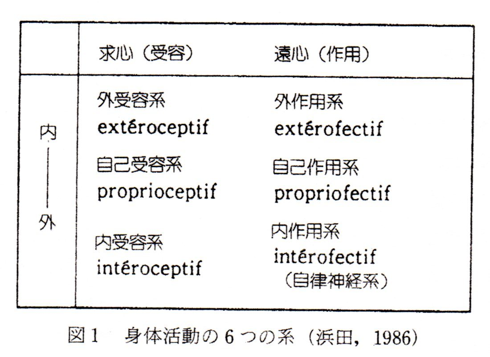
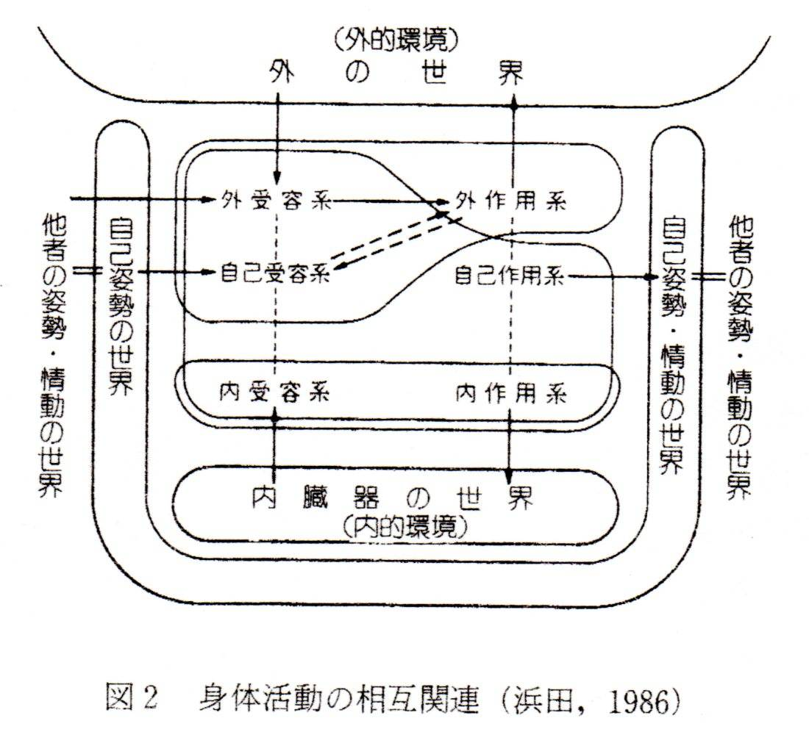
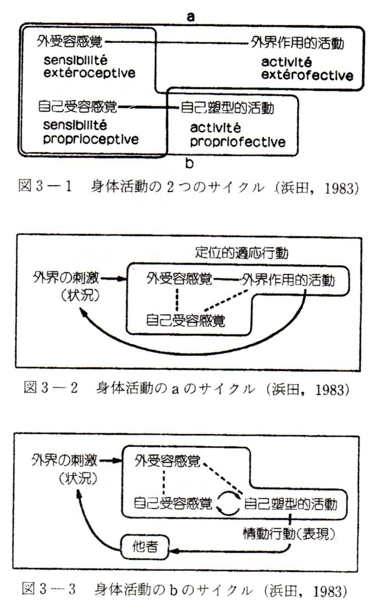
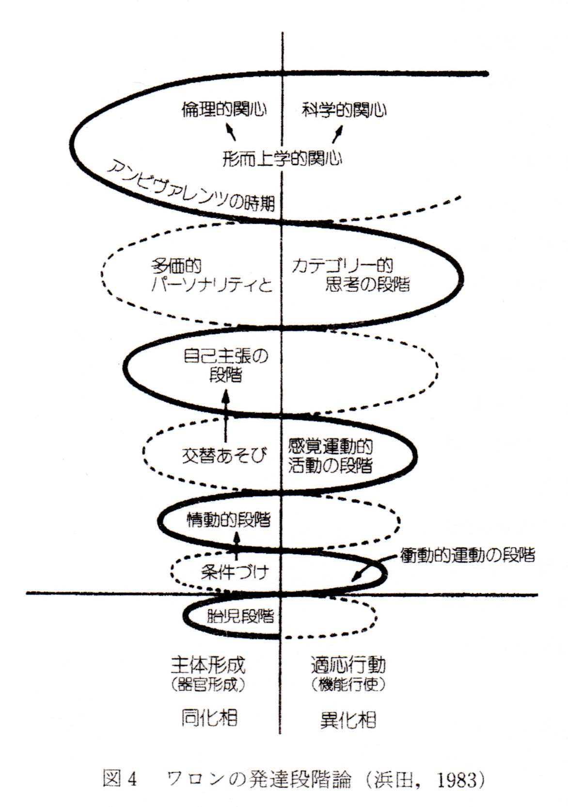
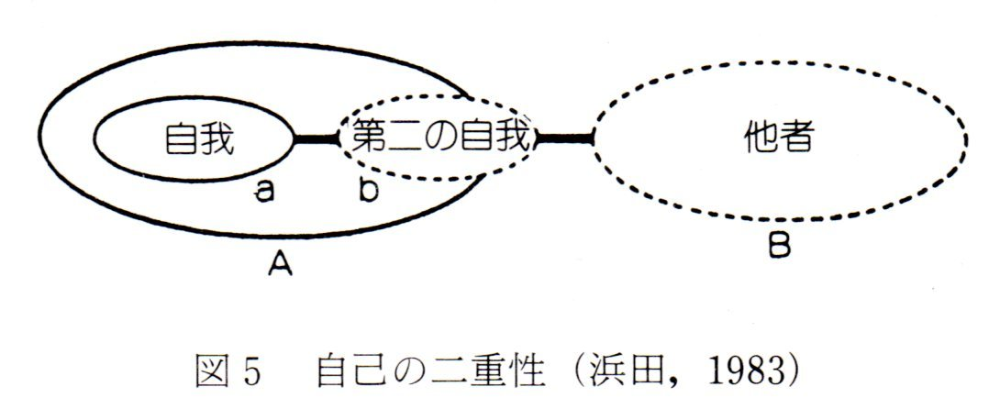

| Wallonによる自己成立論 | |
| 鈴木敏昭 | |
| soutaisya (2019) | |
本論文は自己成立に関するワロン(H.Wallon)の理論を内外の諸研究をふまえながら、統合的全体的に明らかにしようとするものである。そのための前提としてワロンの心理学の特質をここでまとめてみたい。それは一言で言えば、人間の全体性の把握である。すなわち身体、心理、社会を人格を成立させるものとして統合的に捉えることである。ワロン（1976）によれば、個人はそれを取り巻く現実の総体に、より限定すれば、彼がその一員である集団の総体に彼を結びつけている一連の関係によってはじめて存在する。人間の本質は絶対的（抽象的）本質を問題とする限り、認識できないし、空虚である。
坂元（1990b）によれば、ワロンは心理現象を内面と外面の接触すなわち低位の水準から上位の水準に至る主体による現実の再構成（「対象的活動」）と捉えている。この関係を主体の外界に対する「測定」と呼んでいる。それは主体の客体に対する調整の微妙な関係を表わしている。科学自体も高次の「測定」である。「測定」には求心性（外界の印象化）と遠心性（現実化）がある。ワロンの心理学は現実に適応する主体のもっとも複雑な在り方を、このような「測定するシステム」において捉えようとするものである。この「測定」は人間においては長い複雑な媒介性を経ているが、それが人間間の交流を通して現実化されること、すなわち間主観性を帯びていることが重要である。いかなる器質的なものも、とりわけ人間の大脳に関するものは、すべて社会的起源を持った対象の上で初めて働くのである。
ワロンの主要な関心は単なる発達ではなく、人間の具体的理解にとっての基本的方法として発達の観点が不可避であるということであった。ワロンは子どもの発達を徹底してパーソナリティの発達として捉える（浜田,1983）。諸心理機能は独立に存在するのではない。だからある機能のもっとも単純な現われを突止めたとしても、それをあらゆる場合の典型にはしない。ある機能はその他の機能の連関において具体的に現われてくる。人間の機能は生理学的であると同時に社会的でもある（坂元,1990b:59-62）。「（ワロン）においては、大脳の生理的・解剖学的事実を語るまさにその地点において、人間の心的表現と社会的な関係性とが予想されている」（浜田,1983）。そして「･･･今日でもなお真理として存続している原則は、子どもの発達を全体的にとらえるということであり、発達をいくつかの固定的な動きのとれぬ時期に分割しないことである。」（ｻﾞｿﾞ,1978）。かといって、心的活動の発達は連続的増大ではない。重要なのは一つの動作の具体的性質ではなく、それが属す活動の体系である（ﾜﾛﾝ,1982b）。機能間の協応は一つの機能の類縁性（未分化性）が縮減・制限（分化）されて、他の機能との対立において、それら機能間に一定の定常状態が作り出される平衡状態へ向うことによる（坂元,1988）。
発達においては同じ心的操作が様々の水準をみせるというデカラージュが見られる。困難さが増すと、操作はより低い水準でなされる。また実践的にはできるのに、言語的水準ではできないということも起こる（ﾜﾛﾝ,1982b）。「ワロンにとって起源にさかのぼるということは、かならずしも萠芽的な形態を研究するということではなくて、他の種類に属していたり、説明しなければならない行動とは見かけのうえで矛盾していることもありうるような行動を研究するということなのです。本当の情動への前奏曲、つまり他者と関係した情動とは、呼び声、泣き声、内面的な感受性だけを表出する身ぶりなのです。模倣つまり一つのモデルの多少とも意図的な模写への前奏曲とは、反響の、もしくは物まねの自働性なのです。定義の活動への前奏曲のうちの一つは、同義反復的な反応です。」（ｻﾞｿﾞ,1978）。「ワロンがいいたかったのは上昇、構成、発生なのです。最初純粋の興奮にすぎなかった運動がどのようにして、また最初純粋の運動放出にすぎなかった叫びや泣き声がどのようにして精神的なもの（･･･つまり周囲との有意味な結びつき）となるのか、情動と動作からどのようにして表象が創発する[é merge]のか、最初の共棲状態からどのようにして自我の感情が派生してくるのか、といったことなのです。」（ｻﾞｿﾞ,1978）。このように発達を見る場合、問題は行動の各時期を、その原因として、以前の時期に解消することではなくて、それが、以前に実現された経験とは無関係な条件にもとづいていないかどうかを明らかにすることである。例えば、思考発達における言語の介入などはそのよい例であろう(ﾜﾛﾝ,1970）。
器質的なものから精神的なものへの移行の機序を明らかにしたことはワロンの重要な貢献の一つである。「彼が情動と表象における緊張性(トニシテ)、つまり姿勢の機能に割りあてた役割は、おそらくはじめて生理学的なものの精神的なものへの変換を私たちに明らかにしてくれるものです。」（ｻﾞｿﾞ,1978）。ワロンは初め医者として精神病の研究をやり、ついで障害児や戦争による頭部損傷の神経学的研究を行った。彼の精神的活動における身体的基盤の重視はこのような背景にもとづいている(Heuyer,1962）。ワロンは情動の研究によって、心理学に固有の対象が主体であるという観点を失わずに、客観性の要求にも応じつつ、より精神生活の緊密な諸局面の探究ができると考えていた。情動行動は器質的、心理的、社会的という三重の性格を持っているというだけでなく、その３つの側面が相互に重なり合っているのである（ﾏﾙﾃｨﾈ,1991）。「ワロンは結局のところ情動、運動性、模倣、社会的仲間というワロンにとっては緊密に結びついた四つの概念から出発する。」（ｻﾞｿﾞ,1978）。
しかし、人格全体を捉えるということはきわめて錯綜した作業を必要とする。「･･･ワロンの場合には学説とか体系といったものがありません。･･･ワロンとは諸事物に接近する一つのやり方、一つの態度、一つの方法なのです。」（ｻﾞｿﾞ,1978）。ワロンにとって現実の示す矛盾対立を認め、発達的展開の様相や現在の力動の様相を矛盾のもとにとらえることが弁証法的理解に達する道である(Wallon,1938；ﾜﾛﾝ,1960）。Malrieu(1979）はワロンの心的発達の弁証法として４つの主要な領域をあげている。第１は、生物学的諸機能と社会的規制の間の相互作用である。第２は、主体の反応と環境の関係である。第３は、無意識と意識（葛藤が意識化をもたらし、それが無意識を組み直す）の関係である。第４は、反応と行為者（反応することが主体自身を変える）の関係である。なお鈴木(1981)はワロンの弁証法の問題性を指摘している。それによると、両義性、反転(alternance)の問題こそ、ワロンを魅了し、悩ませた中心問題であった。しかしワロンは既存の理論に対置的に介入する方法を取っているために、理論的解決の水準に突如実例を持ち出し、記述的態度に転落する。ワロンの弁証法はヘーゲル的目的論へとずれてしまう。だが事実は既にそこにある。現実が持つ「円環の再生産論」こそ分析の困難を示していると述べている。
「人間の社会がいかに広範囲に及ぼうとも、人間の世界がいかに抽象化した観念にまで飛翔しようとも、人間の現象の根本は身体にあ［る］」（浜田,1986)。
ワロン(1982b)によれば、活動の根底には同化と異化の２つの局面の交代作用がある。異化は構造の利用と消費であり、外界への遠心的で直接的反応である（一次的反応）。同化は内部構造の構成・蓄積であり、求心的で多少とも遅延的活動である（二次的反応）。それは新生児ではまず食欲と睡眠の交代作用として現われる。運動機能においては外界との接触と自己受容的感受性という２局面の交代作用がみられる。環境への反応には常に調節作用があり、外へ向かうのと相関的に精神身体的変容を含む。それは姿勢を通して意図や心像の基盤となる。また擬態、観想というものも直接反応ではない形での場面への融け込み（一時的自己疎外）を示すものであり、内部構造の再構成をもたらす。模倣においては正反対の方向づけを持った２つの契機が見られる。弾力的結合（直観的同化）の契機と統御された使用と実行の契機である。フロイド学説におけるエスと自我の交代作用もそうである。知的な面での同化と差異化の交代作用を考えることは、異化相の中で認識機能の発達が同化相での自我発達を促し、次の段階で自我発達が今度は認識機能、外界適応機能の発達を促すというように認識と人格の相互作用を統合的に捉えることにもなっているように思われる。
浜田(1986)によれば、身体活動には大きく３つの系列が考えられる。
1)生命機能を軸とする系列
消化と循環の代謝過程を中心とした主として内臓が関わる系列で、内受容系（内臓感覚）－内作用系（自律神経系）が軸となる。
2)適応的関係機能を軸とする系列
外界への適応を中心とした系列で、外受容系（五感）－外作用系（行動）が軸となる。外界の構成はいくつかの段階を経て、なされていく。はじめは物に融即している。やがて概念的空間の中に物の諸次元を統合できるようになる。
3)姿勢・情動的機能を軸とする系列
情動は外界への活動とは別の起源（臓器的反応や緊張性反応）から出てくる(Wallon,1938）。姿勢には情動が伴い、情動には姿勢が伴うように両者は一体のものである。それらは骨格筋の活動を中心とした系列で、自己受容系

（筋緊張など）－自己作用系（痙攣や泣きなど）が軸となる。情動は直接外界に向けられた活動ではなく、自己に作用し、自己の状態を変える自己塑型的活動である。
ここで浜田によって、身体の活動の領域を図式的にまとめておこう。図１

（浜田,1986）は身体の活動の領域を２つの軸によって、整理したものである。図２（浜田,1986）は各領域の相互関連を図式化したものである。図３-1,3-2,3-3(浜田,1983)は身体の活動の場を大きく２つのサイクルに分けて図式

化したものである。図3-1のａのサイクルは図3-2に取り出したように、外界への適応活動を示す。図3-1のｂのサイクルは図3-3に取り出したように、情動反応のような姿勢ｰ緊張性の自己塑形的活動を示す。
シェリントンは外受容感覚と内受容感覚を区別したが、ワロンは第３の感覚である自己受容感覚を導入した。内受容感覚と自己受容感覚は当初から快不快の色合いを帯びている点で外受容感覚と区別される。ヘッドは原始感覚の名で内受容感覚と自己受容感覚を組合せ、弁別性感覚の名で外受容感覚に対応させて、両者を対置させたが、ワロンもそれを参考にした(ﾏﾙﾃｨﾈ,1991）。
はじめ（生後１年位まで）は、内部感覚の領域と自己固有感覚（平衡姿勢運動感覚を含む）の領域と外部知覚の領域の間に一致がない(ﾜﾛﾝ,1965b）。
1)外界知覚系
外部知覚(sensibilité exté roceptif)は生後しばらく経ないと協働作用として現われてこない。生後２週間は刺激があっても、外界との交渉とは関係ない、器官自身の活動に属する反応が生じるだけである。２ヵ月になると、感情的な反応が次第に感覚-運動的活動に取って代えられるようになる。感覚器官の協応ができるようになると外界を弁別する活動が生じるようになる。ここで把握や手操作が外界志向性を強めるのに重要な役割をもつようになる。またこの頃、微笑みや泣きなど身振り表情の機能が現われ始める。それを介して、大人からくる刺激は意味としての自立性（カテゴリー性）を持つに至る。そこに予期の能力も入ってくる。さらに平衡のための協働作用ができはじめると、移動運動はもとより、外部感覚にも筋肉の可塑的姿勢形成的機能が働くようになる。またここからくる自己感覚が身体感覚と精神活動に統一性を与える源になる。
３ヵ月までは知覚というよりも内部感覚（消化管）と自己受容感覚（姿勢）の快・不快によって反応している。「赤ん坊があばれたり静まったり色々にするのは、おっぱいのそばにいるとか･････抱かれ心持ちとか、その他の全体の感覚的雰囲気をなすものとか、われわれの気がつかないかもしれぬものによるらしく思われる」(ﾜﾛﾝ,1965b)。自分の要求の満足にいつも先行する刺激だけが感覚運動装置を呼び覚ます。この時期は条件反射の法則に帰結する。
３ヵ月をすぎると、内部感覚や自己受容感覚との間に髄鞘沈着によって連絡がなされるようになる。それによって知覚の場が統一され、印象そのものに捉えられるのでなく、刺激源を認識するようになる。平衡機能が働いて、頭と目の動きの協応ができるようになる。また視覚が重要な機能を持ち始める。
６ヵ月ころには掴む活動が現われ始める。視覚も外界の未知の目標に向かって反応を引き起こすようになる。こうして予期する能力と道具を使う能力が出現する。１年目には手段ｰ目的関係がわかるようになる。
しかし対象をそれとして認めるためには感覚ｰ運動とは別の象徴の平面に移行しなければならない。表象を運用するための空間の獲得が必要である（ﾜﾛﾝ,1965b）。
2)自己受容性感覚(sensibilit é proprioceptive)
自己受容感覚は運動中あるいは一定の姿勢をとっているときの部分間の統一、活動時の力動的統一、外力に対抗する静的な統一を可能にする機能体系に属する感覚である。そこには空間における統一と一貫性、時間における正しい配分と連続という二重の条件が必要である。胎児期から２系列の反射が存在する。迷路反射と頚反射である。頚反射は自己受容感覚が身体の部分間の位置変化に起源をもつことを示している(ﾜﾛﾝ,1965b）。これらは移動のための平衡、姿勢、身振りを保証する調整の源泉となる。また成人における自己受容感覚として、ジェットコースターのように平衡感覚を刺激する遊びやスポーツやダンスのように平衡感覚の洗練された形が見られる(ﾏﾙﾃｨﾈ,1991）。
3)内部感覚（内臓感覚）(sensibilit é int é roceptive)
内部感覚は栄養、循環、呼吸機能などに関係した活動の感覚であるが、とくに消化管など栄養機能に関係したものが目立っている。吸飲など口腔の活動は生体の要求と外界との仲介者となる。外界知覚と連絡ができるようになると、口で物体を識別するようになる。シュテルンのいう口腔空間の時期である。また尿意は欲望、期待、不安など多様な感情と混ざり合っている（ﾜﾛﾝ,1965b）。
なお2)と3)はともに閉回路性であり、姿勢機能（緊張性の収縮、相反射性の収縮）に関連している点で共通している。
Wallon(1925)によれば、情動の波動は２つのシステムへ侵入する。１つは関係の機能を持ち、脳ｰ脊髄神経系と末梢器官は横紋筋から成るもので、もう１つは内臓活動の機能を持ち、自律神経系と末梢器官は平滑筋から成るものである。情動は神経インパルスの量的増大とだけみなすわけにはいかない。そこにある要因を識別する必要がある。相運動性(phasique)の収縮は横紋筋に固有のものであるが、有髄神経と無髄神経の両方から神経支配を受けているので、緊張性(tonique)の収縮も共在している。相運動性の収縮には浪費があり、緊張性のものには経済性がある。筋肉における相運動性の機能と緊張性の機能に対応して、運動活動系と姿勢活動系がある。姿勢活動系では姿勢的な筋肉状態によって印象を保持する機能を持っている。その中でも身振りの筋肉が情動を表現する。そしてともに交感神経系の支配を受けていることから、内臓の筋肉反応と類縁性を持っている。
このように骨格筋系の活動には外界へ働きかけるものと働きかけないもの（姿勢の緊張系の活動）がある。後者は塑形的活動であり、模倣の起源となる。またそれは主体の意識の最初の形態である(Wallon,1970）。ワロンはこれらの活動を３つに区別している（ﾜﾛﾝ,1982c；浜田,1986）。
1)外界における能動的で自己因的運動
自己の身体や外的対象を移動させるものである。
2)受け身的で外因的な運動。例えば、重力などに応じて生じる平衡反応＝姿勢である。
3)身体部分相互の関係つまり姿勢的反応、態度、身振りである。2)より心理的性格をもっている。。
いずれも横紋筋によってなされており、その２つの機能が運動の形態に対応する。1)は間代（相運動）性(クロヌス)、2)と3)は緊張性(トーヌス)の機能である。ワロン(1982b)によれば、筋肉の２つの基本的活動は運動（筋収縮）とトーヌス（姿勢緊張）である。前者は間代性(clonique)の活動であり、後者は持続的(tonique)な活動である。適応のための運動の限定は態度（緊張性収縮）の配分にもよる。１つは四肢の運動に伴う強直性収縮であり、もう１つは運動しない部分に生じる補償的なそれである。
トーヌスは身体の各部分におけるその平衡を伴って、各運動に必要な支点を与える。同時に運動と対立して、それを態度に代えることもできる(Wallon,1938）。筋肉のトーヌス的機能とは運動を可能態としておくものである。運動の調節と知覚の調節が密接に結びついている。運動と感覚の２つの極を融合させ、期待する同じ方向づけを与えることができる(Wallon,1970）。あらゆる種類の調節作用は姿勢活動の一部である。態度（姿勢）によって、運動を調節する。また感覚的調節の働きでもある。対象に対して知覚の場を調整し、それらについての一種の前知覚となることができる。さらに姿勢は精神的調節の働きでもある。その外面化したものが身振りである（ﾜﾛﾝ,1965a）。
植物性神経の機能と運動性神経の機能との媒介的機能が姿勢機能である。これは有機体のすべての反応を統合する。成人では姿勢機能は関係生活に凌駕されているため、しばしば知覚されない。乳児の姿勢活動は植物性反応に近いものだが、身体内に閉じ込められていて、機能的活動をしていないし、関係活動（感覚運動的活動）に対立する(ﾏﾙﾃｨﾈ,1991）。
生理学的基盤としてWallon(1925)によれば、末梢と中枢による姿勢システムは運動装置や内臓活動とともに、錐体外路系(extra-pyramidales)の機能に依存している。また情動のメカニスムに属する生体の表出、すなわち内臓、緊張、感受性そして身振りの現象は大脳の最も太古的な部位（視床）に協応の中枢を持っている。また関係生活もそこで自動性の形式のもとで発達してきた。それは皮質活動の段階まで行って、その皮質活動に従属させられたのである(Wallon,1925）。姿勢的機能の神経生理学的基礎はNguyê n(1976)に詳しい。
なお亀谷(1987)によれば、ワロンは純粋に機能的な定義として緊張を考えていると言う。また態度・姿勢に関連する理論として、社会心理学的態度、定位反応、図式、モチベｰション、構えなどがあげられる(Nguyê n Thi Thanh Huong,1976）。
身体は主観的=主体的身体ないし＜生きられる身体＞と客体的=客観的身体ないし＜見られる身体＞という両義性を持っている（玉田,1989）。これと関わって身体は２つの意味で二重性を持っている（加用,1984）。第１の意味は、身体は物でありながら感覚でもあるということである。例えば、手は物でもあるから外界知覚系の対象となるが、手の自己受容性感覚でもあるので、動きは直接的に感受される。第２の意味は、身体全体は自己受容的に感じられるだけであって、外界知覚的に見ることはできないということである。
身体の感受性すなわち体感(cé nesthé sie)はあいまいな概念で、内受容的感覚と自己受容的感覚の両方を含んでいる（ﾜﾛﾝ,1981b）。
そこでこれらの感覚はいかにして明瞭な身体図式としてまとまるのかが問題となる。自己の像を自分だと認めるようになるのは、２歳ころからであるが、そこで問題なのは像の視空間と自己の身体空間（主観的感受性）の異質性の統合である。それは身体図式(sché ma corporel)を構成する（ﾜﾛﾝ,1981b）。運動的活動（身振り）が対象や目的に適応するためには、主観的空間と知覚空間が相互依存しなければならない。そのために感受ｰ感覚的指標のシステムが必要である。知覚の中でも視覚が重要であるが、それも姿勢的活動（自己受容的感覚）と結合していなければ、運動を導くことはできない。運動感覚の方も他の感覚にその効果が反映しない限り、運動感覚として成立しない。このことが明瞭に現われるのが循環活動である。運動感覚系は、その領域を定めるために視覚系の中に準拠枠を持たねばならない。自己身体の器官が身体図式に加わるには、それが目で知覚されねばならない。すなわち外界の対象を自己の身体と区別されるものとして認めなければならない。もし自己の身体がバラバラになる（ラカン）のを感じるとすれば、その前に子どもは自己の身体のまとまりの前直観とでもいうものを持っていなければならない（ﾜﾛﾝ,1981b）。身体図式は各身体部位の姿勢や移動さらにそれらを作り出す潜勢的可能性についての潜在的なイメージである。しかし単にイメージの問題ではなく、身体（身振り）空間と対象空間の関係の問題である（ﾜﾛﾝ,1981b）。運動感覚が視覚空間に影響する場合として、利き手がその人の空間の方向性を左右どちらかが優位なるように規定することがあげられる。レヴィ・ブリュールが「所属性」と呼ぶものもこれと関連する。これは衣服や排泄物など外の物に自己を感じてしまうものである。あるいは自分とは無関係な結果を自分のせいにしてしまうことなども例としてあげられる（ﾜﾛﾝ,1981b）。身体図式の障害は自己の身体の知覚の混乱をもたらす。失行症（ボタンの掛け違い、交差動作の模倣の失敗など）、病態失認や手指失認（ファントム）などがその例である。また発達的にもそれが成立する以前では、例えば、乳児が自分の手足に驚いたり、大人が「あんよちょうだい」と言うと、自分の足をつかんで差し出そうとしたりする。また鏡像を自分の像だと認められないことも起こる。
ワロン（1965b）は個人（生理・心理）と社会の不可分の統一を強調する。「個人を社会から分離･･･させることは、その人の脳から皮質を切り離すことにひとしい。･･･言語領野･･･が社会の存在を意味するのは、ある種族に肺があることが大気の存在を意味するのと同じだからである。社会は人間にとって必然的なものであり、有機的な関連をもった実在である。･･･社会からの諸規定は、個人にとって必要な補体(complé ment)なのである。」
またザゾ（1978）も言うように「フロイトにとって社会的要因は外因性のものであり、社会的なものは生物学的なものに外在的であり、社会の役割は教化し、抑圧することにある。ワロンにとって社会的なものは、人間の場合、有機体と同質なのである。･･･個人-社会の対立はあがなわれえないような性格をもってはいない･･･。」
内受容および自己受容器官の感覚によって引き起こされる緊張反応が、あらゆる情動の共通の源泉であることが姿勢機能の分析によって、明らかになった（ﾏﾙﾃｨﾈ,1991）。情動の起こるきっかけは外受容感覚だが、生じる反応は、身構えたり、ふるえたりなどの自己自身を塑形する活動である。つまり姿勢ｰ緊張性の活動である。この器官・臓器に働く緊張性の姿勢活動の心的な現れが、情動である（浜田,1983）。ワロン(1965b)によれば、心的生活の中で情動は姿勢・態度の働き、つまり一種の筋肉活動に関係し、外的な目的よりも身体自身に深く関係している。緊張性収縮の働きは相的収縮と反対に身体の態度姿勢を統制している。その変化は情緒的な感覚の変化を伴う。緊張には２つの構成部分がある。１つは等張的形成性(plastique)であり、もう１つは収縮性(contractile)のものである。それが受ける作用によって、色々の種類の緊張が区別される。筋肉が動かないときの静止緊張、直立姿勢を保つ起立性の緊張、運動の準備状態としての爆発性の緊張、姿勢の変化を保ち追う支持緊張、カタトニー性の緊張などである。また努力感が筋緊張の程度を表わすとすれば、すべての活動（心的なものも含めて）に筋緊張の増大が対応している(Wallon,1938）。
ワロン(1965b)によれば、情動は本質的に表現の機能であり、姿勢形成的(plastique)機能であるので、姿勢に起源を持つ可塑的な筋肉の緊張を素材としている。それは緊張の昂進と低下に応じて、また緊張が身振りや活動としてなめらかに流出するか溜まっているか発作として用いられるかに応じていろいろになる。情動は本質的に心因的なものであり、臓器的反応から、情動に固有の動機や感受性を切り離すことはできない。姿勢機能は本質的に情動と結びついている、すなわち感情性の外在化である。それは他者への働きかけであると同時に他者の同化でもある（Ajuriaguerra&Angelergues,1962）。
ワロン(1981a)によれば、情動には２種の中枢があり、一つは脳の中心部（下位脳）にある植物性機能の中枢であり、もう一つは大脳半球の前頭領野である。両者は拮抗している。前者の中の間脳の中枢は情動反応で一時に大量のエネルギーを放出する。しかし同じ皮質下の神経核や中脳によって統制される運動領域は痙攣や緊張で自動作用を阻止してしまう。それでもこれは姿勢による表現システムへ進化する可能性を持っている。マルティネ(1991)によれば、視床は感情生活において基本的役割を果している。すべての感覚繊維がそこに集中し、内受容感覚と自己受容感覚の基本的中枢である。視床はまた線状体との密接なつながりによって一つの系をなしており、それが情動が特徴的に現われる自動的態度、身振りと情動要因との協応を説明する。原初的姿勢反射は中脳に起因するが、その段階で線状体の最も古い形態（淡蒼球）が形成される。さらに情動行動は淡蒼球の活動が視床や線状体の新しい核から構成されるシステムに統合されることによって完成する。発達するにつれ、情動行動は皮質によって抑制され、社会的強制や主体の精神水準の影響を受けて変化する。
ワロン(1982b)によれば、泣きや笑いなどの痙攣は筋緊張の急激な解消である。それは運動に先立つﾄｰﾇｽの活動（その弛緩）から生じる。痙攣に伴って、まだ未分化だが、感情の原始的形態である感受性が生じる。そして散発的でなく、体制化された痙攣に結びついた感受性はより精神的なものになっていく。最初に分化する情動は恐れである。
未分化な全体化が心的傾向と外部事象の間に生じ、情動が現実世界に一定の色調を与え、また逆に外部事象は情動を活発に引き起こす。そのことが知性の働かない発達段階や状況では、情動が先導となって適応的反応を起こす。
情動によって主体と融合する状況は物質的なものだけでなく、人間関係が含まれる。個体間にはもともと情動の共鳴や対立という関係が成り立っている。相互融即や伝染である。それは情動の表現能力にもとづく。そして生理的自生的情動表現は外部社会からの感情の影響を受けて、慣例的な身振りとなる。そこに社会的なものと器質的なものとの混ざり合いがある。例えば、微笑みの発達に見られる。まず筋肉緊張のゆるみ、次いで器質的満足による微笑みという局所的反応、つづいて離れた対象の感覚的印象から生じ、最後に人々への満足の表現となる。 感受性の展開はまず自他の融合つまり自己の他人への疎外から出発するが、やがて自他の対立をもたらす。そこから人格性の進化が始まる。
1)行動と意識（表象）の拮抗
生得的な環境への順応的活動としての自動作用が存在する。生物体と外界は相補的で、一つの連続的全体を成している。本来、分解できないものである。このことは獲得された自動作用についても言える。自動作用と表象は拮抗する。そして人間では自動作用を抑制して、表象（思考）による適応が発達する。それは姿勢活動に起源を持っている（後述）。知覚の発達は運動の発達に依存するが、対象と融即せず、主-客を分化させる知覚をするためには、自動的反応を抑えなければならない。それは緊張的あるいは姿勢的活動である。この活動の変化は知覚をも変化させる(ﾜﾛﾝ,1965b；Wallon,1938）。
2)情動と自動作用の拮抗関係
危急の場合は自動作用が情動を打ち負かし（衝動行為）、情動が強くなると、自動作用は乱される。情動が交渉的活動に適合する場合は自動作用に必要なエネルギーを供給する。皮質機能の発達が関係生活に拡張性と独立性を与えると、自動作用に対する情動の支配は減少していく。情動を抑えることで、自動作用から意図性や表象による意識の段階へ移行する。これは皮質の感覚領と運動領の間に優位な連関ができるからである。ワロンが自動運動と情動の相違について問題にしたのは、異常児では両者が互いに排除し合って完全に常同的になっているのに、正常児では異なる機能でありながら、連続しているのはなぜか、そのしくみを明らかにしたいからであった（坂元,1988）。心的な機能が優位になるほど、情動は頻度が少なくなるが、一旦起こると活動に対して妨害的な効果を及ぼす。例えば、それまで取っていた姿勢・態度を崩して、新しい姿勢・態度を即座にとらなければならない時など、宙に浮いた状態は恐怖をもたらし、適切な自動作用を壊してしまう。情動によって、無言症など言葉の自動作用が壊れる場合もこの例である(Wallon,1925）。また適度の緊張が姿勢機能に影響して活動を準備させる。また緊張した待機の姿勢が知覚に影響して、対象物と一体化させ、他の刺激に無感覚にさせることもある(ﾜﾛﾝ,1965b）。
3)情動と表象の拮抗関係
情動は感覚や表象を損う。表象と情動の相互影響には２つの場合が考えられる。１つは観念化である。これは情動を感傷・情操(sentiment)へ変える。もう１つは目的や対象物についての表象が情動を支配する場合で、情熱・情念(passion)と呼ばれるものである(ﾜﾛﾝ,1965b,1982b）。実行的直観は理解の最初の形態であり、情動的であるが、それは徐々に知的作用の素材である表象にとって代えられる。これは情動と拮抗する。情動の表現手段の洗練化は表現手段の情動からの分離を促す。言語はこうして逆に情動をせきとめ、その伝染性を破壊する(ﾜﾛﾝ,1982b）。
4)情動における混淆的意識
情動に捉えられると、自我と非自我の境界が意識の上から消えてしまう。知覚も思考も活動全体に溶けこんでしまって、弁別的でなく混淆的となる。そこにいっしょだった偶然的状況が情動と連合される。この情動の同化的な性質は条件反射のメカニズムと同じものである。非合理な観念の結びつきである迷信や乳児の混同的な因果性にも同じしくみが見られる(ﾜﾛﾝ,1965b）。
5)情動における姿勢活動と感覚の二重性
姿勢緊張における収縮と感覚の間に密接な相互依存関係がある。それは子どもの最初の感覚－運動複合体である。姿勢は状況が要求するかもしれない動作を潜在的な状態で保っており、それ自身、子どもの注視の対象でもある。情動を形造る姿勢反応は自分自身にそれを見せるという演出的効果、一種のナルシシズムを持っている。それは原始的な潜在的意識といえる。そこに二重化がある。すなわち一方には表情があり、それが意識の対象になって、見る者に、他人の表情と同じように迫ってくる。他方、表情についての自分の意識は他人の意識と同一視される。自他が未分化なのである。例えば、泣いている子どもも自分一人だけだと、すぐ泣きやんでしまう(ﾜﾛﾝ,1965b）。
6)情動と知覚（外界交渉的活動）の拮抗関係
定位的適応行動と拡延的情動行動が拮抗し、阻害しあう場合である。例えば、針に糸を通していて、イライラすると余計うまくできない。逆に、交渉的な感覚は外界定位がない内的感覚へ瀰漫していくような局部感覚（例えば、足の裏のくすぐり）を鎮める。つまり両者は拮抗する。これはまた「原始感覚」と「弁別性感覚」の区別(ヘッド)に対応する。前者は交感神経系の活動に関係している。その中枢は視床にある(ﾜﾛﾝ,1965b）。拮抗関係は虫歯や傷に触ってみる強迫的行動や頭を壁にぶつけたり、自分に咬みつく自己虐待症（自傷行動）やマゾヒズムなどのいわゆる疼痛嗜好的現象にもみられる。それはある興奮による原始感覚的緊張の優勢を打消すために強い表面刺激（弁別的感覚）を与えて対抗するものといえる。ここに自己虐待における意識の二重性が見られる。それは苦しむ自分のうしろに苦しみを楽しみにするもう一人の自分がいるような状態である。自分の痛みをからかって楽しむ（能動的態度、加害者）ことと被虐的になりたがる（受動的、被害者）ことの二重の態度とも言える。この二重性は苦痛を表象の形にして対象化し、自分に悩みを対置し、眺めることによって、悩みの情動性をやわらげる働きをもっている。だから緊張への性的興奮の混入も圧迫、不安による緊張の欝積の解消の働きを持つのである(ﾜﾛﾝ,1965b）。
Wallon(1938)によれば、情動の効果は物理的環境とは異なる次元での関係すなわち集合的関係に対応している。これは情動の伝染性という特性にもとづいている。情動は類似した、あるいは反対の反応を他人に引き起こすことにより、他人に伝染する大きな力を持っている(ﾜﾛﾝ,1965b）。情動的反応の直観は、その反応を再現させたり、多様化させたりして、感覚的な模写として二重化する（反応=自己性と同時に感覚=他者性ということか？）。その模写はその情動に似たすべてのものを表象する。これが内界と他者を結ぶアンテナとなる。情動によって、個体は同じ反応を引き起こした他の個体と同調する。共感はこの伝染から生まれる。この伝染が他者の観念を導入するのであって、そこから生じるのではない。集団的活動は歴史的には情動表現という手段によってしか存在しえなかった(Wallon,1925）。情緒的共生といわれる時期に赤ちゃんの泣きに対して大人が介助したり、様々な共鳴動作が生じるのも、また人類が祭りや儀式という形でその共同性を作り上げるのも、この情動の伝染性によっている。そのことによって、集団は、その根源を個人の身体の中に持つことにより、実在の身体のごときものになる。つまり情動は最も身体的な反応体系に属しながら、当初から集団からの規定を受けている。さらに儀式化した情動が象徴作用（とくに言語）と集団的心性を準備したとすれば、それは自動作用と認識の媒介でもあったといえる(ﾜﾛﾝ,1965b）。情動は意識の間個人的関係(relations interindividuelles)の最初の場である(Wallon,1938)。「人どうしが交感し、共同的な世界を作り上げていくその核になるのが、情動的活動なの」（浜田,1986）である。情動の身体表出が人と人とを結び付ける働きを持つのである。人間はこの点で「間身体的」存在なのである。人類の歴史の中で情動は共同活動として成り立つ適応の一形態として役立ってきたし、それゆえひとつの制度のようなものになった。未開人の儀式は模擬の集りであり、それはすべての人に、同じ態度と同じ身振りによって、同じ興奮を生じさせ、一種の「上位個人」のもとに彼らを接合するものである。現代でもなお情動は態度、身振り、動作、他人への無意識の反応などを通して、集団の激情とでもいうものを生み出し、各人の制御を越えた一種の一般的同意によって、大衆を作り出し、群衆を活気づける。情動による相互融即は心的やりとりの最初の形態であり、ある集団のメンバーに連帯の多様な関係の生じる条件である（図3-3参照）。このように情動による言語以前のコミュニケーションは原始的な社会性の重要な要因であったと思われる(ﾜﾛﾝ,1981a）。
1)姿勢・情動と意識のモティーフ
意識・表象は知覚やその記憶から直接生じるものではない。Wallon(1925)によれば、情動は自動作用から客観的行為への進化の契機をなす。情動の過剰興奮は内的感受性の中にその動機を見出す。そのような有機体の変容にもっぱら占められた意識はそれに条件づけられているが、情動に閉じ込められたその系が意識の最初の源である。すなわち主観的なものが情動の領域である。「適応行動では適わぬ場面におかれたとき、自らの中に巻き起る緊張の嵐が情動だとすれば、そのように全人格を巻き込む印象的体験が意識として浮上する」（浜田,1986）ことが考えられる。適応的な自動作用が阻止されたとき、姿勢（トーヌス）・情動興奮が生じ、その印象的体験において意識・表象が登場する(浜田,1983)。例えば、獲物を狙ってじっと待機するなどの定位活動の場合である。Wallon(1938)によれば、子どもは、自分自身の態度（姿勢）を通して外的現実を意識する。姿勢・情動系は場面の多様性に応じて分化・分節し、その多様性を反映する(浜田,1983)。そしてこの態度（姿勢）から来るイメージには情意性が入り込んでいる。これが行為の中に意識のモティーフを持ち込む。情動の表現機能とは本質的に自己塑形的活動(activité propriofective)であり、姿勢機能から生じるものである。姿勢はそれに対応する場面の存在を意味する。こうして姿勢は意識の最初の支えとなる(ﾜﾛﾝ,1981a）。情動はこの姿勢機能の心的実現であり、姿勢機能から意識の諸印象を引き出してくる。情動表現に身をゆだねる各個人において、その表現のシステムはもとからその意味を感じる能力を前提している。情動の素材である緊張性活動では意識と活動は最初は混淆している。意識は姿勢の変動に従うとともに逆に意識がモティーフとなって姿勢の変動を起こしたり、方向づける(Wallon,1938)。心の状態と身体面での動きとが同時的に調整されるおかげで、つまりそこに相互可塑性があるおかげで、意識が情動とともに登場することができたのである(ﾜﾛﾝ,1965b）。
状況の多様性が情動を態度のシステムと多様な心的形成物において分化させていくのに応じて、情動は表象活動の出発点となる。構音化された言葉も情動がそこから生じてくる姿勢あるいは緊張性活動に帰着する。もちろんすべてがそこに還元されるわけではない。ある状況では情動と表象は対立する(Wallon,1938）。
2)情動の共同性は意識の共同性の根拠
「情動は本来他者に伝わるものであり、他者との交感性を支えるものであって、この情動が意識の根であるとすれば、このことからただちに、意識は共同的なものとして位置づけられることになる」（浜田,1983,1986）。
子どもはそれぞれ、筋肉活動の調整の仕方に応じて、異なる運動的気質を持っている(ﾜﾛﾝ,1982c）。ワロン（1965b）によれば、姿勢や緊張の活動がしなやかで興奮や表象からすぐに活動に推移しやすくなっていることは、快適な気分とか、元気で陽気であるとか、外界への適応がすばやく従順であることとして現われる。反対に、興奮や意図と運動や思考との間に、一種一般化した硬直性が介入しているごとく見えるようなときは、活動や考えが絶えず遅滞し中断し、これに不安や懸念がともなう。クレッチュマーの循環型の体質は緊張の使い方が流暢になったり、硬直したりするもので、生理的な起源をもつ。情動型の人は刺激を認識するのでなく、情動的色彩を帯びてしまう。これには痙攣運動的傾向の優勢なタイプと自己注視的感受性の優勢なタイプの２つがある。後者では演劇化を生じさせる。反省型の人は刺激や情動を表象に変えることで情動を回避する。感傷型の人は情動型とは異なり、空想を通じて、反省へ至ることがある。坂元（1990a）が言うように、態度・姿勢は筋肉システムと関係し、その潜在的・顕在的あらわれは行動の永続的タイプとしての性格と関連する。寝相にそれがよくあらわれている。
パーソナリティとは生理-心理的存在としての人間の全体をさす。身体や精神の成長は全体的経済の変化の結果である(ﾜﾛﾝ,1983c)。その変化には２種のものを区別することができる(ﾜﾛﾝ,1960,1983c)。１つは相(phase)といわれるもので、エネルギー消費のモメントとエネルギー蓄積（回復）のモメントに関わる。生理学的には同化作用的反応と異化作用的反応である。もう１つは同化と異化の区別に対応した時期(é tape)・段階(stade)といわれるもので、人格の構築過程（主体的活動）が優勢な比較的潜伏的な時期と外界への適応活動が優勢な（客観的）活動性の大きい時期が発達の上で交互に見られる。このことが機能の予示やみかけの停滞や退行を説明できる。相の交替と時期・段階との間にはいくつかの一致が認められるが、近似的・流動的なもので、一つの段階の中で２つの相が現れることもある。発達における運動機能（外界）と情動機能（内面）は交互に優勢になりながら、対立しつつ連関し合って、発達を促していく。その節々に発達的危機が生じる（Dublineau,1962）。以下の大きな時期区分（各節に対応）はワロン(1983d)を参考にした。それはワロンの発達段階をさらに大きくまとめたものである。なお浜田(1983)はワロンの発達段階を図４のようにまとめている。

胎児期には栄養などあらゆるものを母体から受け取る。徹底的な寄生であり、生物学的に完全に依存した状態である。生理的共生といわれる。ほぼ完全な同化（器官・主体形成）の相である。運動反応は姿勢の反射で、グローバルな反応であり、そこにわずかながら機能行使が見られる。この時期でも外からの印象によって、一定の姿勢反射を起こす(ﾜﾛﾝ,1983d,1983c）。
ワロン(1960)によれば、３種類の活動が見られる。睡眠（同化）と栄養（同化と異化が混ざり合っている）と運動（異化）である。もっぱら反射的自動作用による異化（適応行動）の相が優勢である(ﾜﾛﾝ,1983c）。新生児の行動は緊張放出の散発的反応でしかない(ﾜﾛﾝ,1983a）。行動への意識の介入の前に、刺激が引き起こす反射や自動作用の単なる放出がある。刺激と反応の間に主観的動機(motif)さえ入らない。反応が原因を越えた広がりを持ち、結果がそれ自体に存在理由を持つようになっても、結果に至る過程は機械的なもので、主体の有効な関与はない。動機が活動の原因と結果の間に入り込むようになると、そこに意識の到来を見ることができる(Wallon,1925）。「受容から作用に至る過程に、媒介的な組織化がいまだ介在せず、行動にモティフが欠けている」（浜田,1986）。そのため必要な動作は大人から補ってもらい、解釈してもらわねばならない。誕生直後の３ヵ月間、新生児は呼吸反射（産声）以外では周囲の人々とくに母親の助けが必要であり、無力な存在である。そのため子供の生は見分けがつかないほど周囲の人々と混ざり合っている。子供は閉じた系ではない。最初は内的まとまりはない。それは姿勢感覚とよばれる感受性についても言える。姿勢(attitudes)の形成は大人が子どもに対して行う動作の中でなされる。すなわち自発的表出運動（情動的動作）は周囲の人々の介助を引き出し、両者は情動の場の影響のもとに速やかに結合する。これは条件反射的結合であり、生理学的連合にすぎない。すなわち先行の欲求（ミルクが欲しいなど）や不快（おしめが濡れているなど）の印象（無条件刺激）と後続の印象（抱っこされるなど、条件刺激）の間に連合が成立する。例えば、授乳の位置に抱かれただけで吸う動作が起こる。姿勢感覚による条件連合が形成された後に、聴覚による条件連合、ついで視覚による条件連合が形成される(ﾜﾛﾝ,1983b,1960）。パヴロフが大脳皮質に与えた役割は分析の役割であり、それは要素的ではなく、全体的反応である(ﾜﾛﾝ,1981a）。なお条件反射についてはワロン（1960)に詳しい。
感覚の発生について言えば、外部感覚は最初は独自に存在するのでなく、内部感覚や自己受容感覚と融合している。例えば、皮膚感覚や視覚、聴覚なども最初は全身の反応を引き起こす。それが徐々に分化し、脳の高次の統合作用に支配されるようになるが、最初の原始感覚と完全に分離されるわけではない。それはヒステリーやパニック時の反応に見ることができる。すなわち高次のコントロール以前の原始感覚への退行が見られる（坂元,1991）。
欲求の満足は自動的にはいかないで、欲求の発生とその満足までにズレが生じる。そこで身体を痙攣させたり、泣くことになる。動きは方向づけられていず、運動発作に似ている（筋肉的ｴﾈﾙｷﾞｰ発散）。筋肉活動でいえば、間代性(クロニク)反応である。だから子どもの欲望の唯一の道具は子どもを周囲の人と関係させる子ども自身の反応である。子どもの最初の行動は人に向けた表現的な身振りである。従って、表現の機能は欲望の実現の機能よりも先行する。これが言語活動の準備をし、人間を社会的動物たらしめるものである(ﾜﾛﾝ,1982b,1983a,1983c,1983d）。次の段階を準備するのは周囲の大人たちと相互影響しあう、条件づけのこの表現的性格である（Tran-Thong,1980）。
姿勢の緊張性ﾄｰﾇｽ反応の発達は、①姿勢を変えるために外界に支点をとった筋肉のトーヌス配分の組織化と②栄養の欲求と姿勢の欲求（姿勢を変えてほしい、移動させてほしい、揺すってほしいなど）に結びついた条件反射の形成である(ﾜﾛﾝ,1983c）が、これは自己塑形性という点で次の段階での同化の相を準備するものでもある。
生後２，３カ月から始まり、６カ月頃が最盛期である。同化の相である。Wallon（1925）によれば、情動的動揺は反射や自動性とは異なり、有機体全体の中に拡延するもので、潜在的性質を持った不確定性を生じる。その表現が態度・姿勢である。このことから行為の中に一種の意識が導入される。最初の意識の形態は外界に関わる印象の意識ではなく、有機体の中に引き起こされた混乱や衝動なのである。情動は意識なのである。ただし主観的な（対象と関わらない）意識である。「情動パタンが他者との関係のなかに入り込んで、そこに緊張→解消の回路を生じたとき、この緊張の波が赤ちゃんの心的モティフとして意識性を獲得することは容易に考えられる」（浜田,1986）。その神経生理学的条件として情動的段階の出現は視床ｰ線状体(opto-strié )系および淡蒼球(pallidium)の成熟に対応している(Tran-Thong,1980）。
１）母-子の情動的相貌的交流
２カ月前後から母子の相互的微笑などの相貌的交流が見られる。これは相手の中に見た微笑の視覚イメージと自分の運動感覚の間につながり（融合）ができていることを示す。自他が未分化であるためである(ﾜﾛﾝ,1983b)。このころ生理的連合にすぐに別の連合が重なっていく。個人間の関係という平面である。情動表出が介助を期待して意図的になっていき、手段化する(ﾜﾛﾝ,1983a）。
３ヵ月ころから、母親に泣き声で世話を求めたり、微笑みなどで満足のしるしを示したりする。６ヵ月ころから、情動的段階が展開する。スピッツが示したように、母親との情動的接触がないと、身体的衰弱をきたす。子どもは物質的栄養と同じくらい人間的関係によって生きている。ここでスピッツの考え方と結びつく(Ajuriaguerra&Angelergues,1962）。このころから周囲の人を区別できるが、まだ個人として区別するのでなく、自分の環境の中でのその人の役割・様相からそうしているにすぎない。歩行や言葉を獲得するようになると、社会的発達は急速に進む（ﾜﾛﾝ,1983d）。
ワロン（1983a:59-60）によれば、表出に２つの作用があることになる。願望を表わす遠心的作用と他者の反応を感受する求心的作用である。母親の微笑みに対して微笑み返すなど情動の擬態(mimé tismeé motionnel)、情動の伝染性が見られる。それは集団では個人間の境界が消去する融即状態(participation)をもたらす。情動を統制する中枢は皮質下領域にあり、系統発生的により古い機能である。
坂元（1989）によれば、手と腕の協応動作ができ、手の運動と口の運動が協応できるようになると、フロイトの「口唇段階」を形成する。ワロンはフロイトのようにそこに性愛的意味を与えていない。この時期、なんでも口に持っていく。フロイトのいう口唇期における生命機能への依託からの性欲動の自律化はワロンのいう肉体的協応から精神的協応(synergie)への転換に相当する。両者は性欲動に結びつけるかどうかでは、異なるが栄養機能と結びつく快感が情動（心的な）発生の重要な基礎と見做した点では共通している（坂元,1990a）。
２）自他混淆(syncr é tisme)
２－３ヵ月ころ、周囲の人と一体になっているため、人が離れただけで、自分の一部が失われたかのように泣き出したりする。動作や泣き声などの姿勢・情動表現は子供の欲求を表わし、周囲からそれに応じた反応を引き起こす。この情緒的共鳴は情動のもつコミュニケーション的性格（伝染性）を表わしている(ﾜﾛﾝ,1983b)。
子どもはすっかり情動の中にいる。それは共感ではなく、融即である。状況に自己を疎外しているので、主体は状況や他者と異なったものとして自分自身を把握できない（ﾜﾛﾝ,1982b）。こうして子供は周囲の人と密接に結びつき、他人と自分とを区別できない。子どものパーソナリティは自分に触れるすべてのものの中に拡散している。純粋に主観主義（情緒的緊張からくる主体内にのみ関わる情緒的意識）の時期であり、同時に主観的癒合(syncré tisme subjectif)の時期である。また逆の効果として周囲との相互浸透が感受性を豊かにすることもある。胎児期に対して、真の情動的共生（symbiose affective）の段階といえる(ﾜﾛﾝ,1983c)。従って、環境と融け合っている反応から自分の反応以外のもの、他人に由来するものを除き去ることが問題となる。交替遊びにおいて子どもは状況の能動的と受動的の２つの極に向かう(ﾜﾛﾝ,1982b）。
３）混淆的社交性（最初の対人関係）
７ヵ月を過ぎると、それまで未知の人に恐れを示していたのが、見さかいのない社交性の時期がくる。ビューラー夫人の観察によれば、この時期の子どもを向い合せにしたところ、相手の反応に規定された反応（相互的身振り）が現われた。また見る者と見られる（演じている）者の活動は状況の中でお互いに混同されている。見せびらかしている者は見ている者の期待を感じているのである。いばる子も負けた子の同意を感じるという感情的同一視が見られる。状況から生じた活動がまず独立性を持ち、少し後になって、お互いの立場が独立してくる。例えば、一旦物を相手にあげるとなんでもかんでもあげるという活動そのものに夢中になってしまう（ﾜﾛﾝ,1965b）。情動的段階に入るとまもなく、人に見られることへの意識が芽生えるらしい。ワロンの例では、ある７ヵ月１７日の子は、５ヵ月２９日の子に見られると、手に持った鈴をいっそう激しく振るのが見られた（谷村,1989）。ワロンは「見せびらかしている子どもは、じっと見つめる他者の期待にいわば駆り立てられている」(ﾜﾛﾝ,1965b)のであり、態度の相補的な感染にただ浸っているにすぎないと解釈する。子どもは「関係の中で自律性を失い、自分が参与している構造ないしは場面から自己の役割を受け取る」(ﾜﾛﾝ,1965b)のである。
また対立がある場合は、専制と対抗がある。前者は年齢の開きが３ヵ月以上ある場合で、見せびらかしたり、支配する方は相手から見られるだけでなく、同意の印をも求める。対抗は年齢の差が２ヵ月半を越えない場合で、おもちゃの取り合いなどに表われる。年齢よりも活動が活発な方が支配権を持つ場合もある。ここには情動の伝染があり、まだ「私」と「おまえ」はなく、一体になった「われわれ」しかない（Nguyê n Thi Thanh Huong ,1976）。
他者との係わりの面からは、７－８ヵ月ころに大きな変化が見られる。模倣の出現と「３項関係」の始まりである（山本,1988）。このころから他者の要求や指示をある程度理解できるようになる。また１歳半ころから自分の身体部分を他者から尋ねられて指さしで応えるようになる。
４）情動表現の社会的形成
生理的発現が社会的働きかけによって、ある形式の社会的表現に形づくられる。例えば、生理的反応としての笑いは他者の反応によって表現の通路づけを受ける。その際、条件反射による状況（観念的状況も含む）との結合が大きな役割を果す。情動のもつ混同心性によって、情動的反応と外部の状況との間で条件反射と同じ型の連合が成立する（ﾏﾙﾃｨﾈ,1991）。つまり情動表出の（大人による）読みとりから、条件反応のもつ表現的性格が生じる。例えば、喜びの表現として笑ったり、泣くことが栄養的欲求のしるし（記号）になる。
こうして条件づけを介して母-子間の動作や態度･姿勢、身振りなどによる相互理解のシステムができあがる。そこから期待が生じる。その基盤は情意的（瀰漫的全体的）である。子どもの未熟さのため、このような対他関係を結ぶよりほかに存在の手段はない（ﾜﾛﾝ,1983c,1965b）。
Ajuriaguerra＆Angelergues(1962）によれば、情動的融合は「姿勢緊張的対話(dialogue tonique)」といわれる情動的運動的現象を通して表現されるが、これは後の言語的対話の前触れである。
また信号によって、情動を喚起できる状況がある。条件反射によって、情動はそれを引き起こしたとき（外傷体験）に伴っていた偶然の些細な出来事に結びついてしまう（Wallon,1925）。このころコミュニケーションで使われる信号として視線、微笑、笑い、音声表出、動作、姿勢、表情などがあげられる（Nadel&Best,1980）。このように初めは器質的または自然発生的な情動表出が、模倣によって非常に早くから学習や文化に従属したものになっていく。その点で言語と同じである（ﾏﾙﾃｨﾈ,1991）。
５）情動の分化
最初の感受性（情動）は痛みであると考えられる(Brown)。同様に誕生直後は不快が快を圧倒すると推測される(シュテルン)。ただし生後６，７ヵ月で、苦痛の方が抵抗なく現われやすいだけで、快の表出は存在する（ﾜﾛﾝ,1965b）。
６カ月頃からあらゆる種類の情動のニュアンス（怒り、苦痛、悲しみ、嬉しさなど）を示せるようになる（ﾜﾛﾝ,1983b）。それが周囲の人との交渉の手段になる（ﾜﾛﾝ,1960）。
ｲ)乳児における情緒生活の出発点
ワロン(1965b)によれば、まず内部感覚(sensibilité inté roceptive)からくるものがある。消化管の緊張、分泌、感覚の種々の反応が情動に影響している。口唇肛門段階でもあり、感覚的興味を呼び起こす。しかし性愛的意味はない。排尿の感覚は被虐的印象をもたらす。泣き（呼吸器の痙攣）が、叫びをもたらし、それが言語音声を用意する。叫びはまた感覚を麻痺させる作用があり、情動にとって重要な意味を持つ。次に自己受容性感覚(proprioceptif)からくるものがある。姿勢変化による平衡感覚や身体移動の感覚で、内臓感覚に似ているが、身体や手足の骨格筋にも及ぶ筋肉組織全体の緊張活動(トーヌス)の変化をもたらす。それには相反射的(phasique)な収縮と緊張性の収縮つまり姿勢の活動(シェリントン)が対応している。自動作用の統制となるとき、全体的反応となり、ある種の情緒の原理となる。あくびは呼吸とは別の機能で、ゆっくりした痙攣的な姿勢を生ぜしめる感覚、関節の感覚を起こす。緊張を解放する効果がある。関節の感覚は姿勢の感じを起こし、心的状態のあり方に影響する。最後に外部感覚からくるものがある。外界は感覚を通じて、いろいろの興奮を伝える。味覚、皮膚感覚、視覚、聴覚などであり、これらは最初は生理機能の全身的瀰漫的反応を起こすだけである。しかし次第に刺激は定位的方位的反射をひきおこすようになる。全身的反応とは拮抗する。これは人類の進化に応じたものである。
ﾛ)トーヌスと原初的情動
根元的情動は快と不快である。授乳やお風呂等には微笑み、空を踏む足の動きなど快の興奮・緊張とその放散がみられる。自由になる運動は筋肉と関節の快の感覚を起こし、興奮と喜びが生じる。最初のあらわれは陽気さ、運動的高揚から生じるように思われる。喜びはトーヌスと運動が平衡するところから生じる。内的興奮と身体の動きの相乗効果が見られる。これは3､4歳の遊びにも運動そのものに熱中するものとして見られる。また生後数週間の子供や精神遅滞児でも愛撫すると活発な快感の表現が生ずる。愛撫は反射的反応を引き起こす刺激とは違って、興奮が内部に浸透し、植物的反応（臓器的感応）を喚起する。愛撫はくすぐりと同様のものである。逆に、空腹、眠いとき、ぬれたとき、ムリな姿勢等には口のひきつり、泣きなど、多少とも全身的痙攣(スパスム)が見られる。緊張過剰は活動表現に発散しないと不快となる。くすぐりでもいつまでもやりすぎると痙攣が激しくなり、苦痛の反応に至る。快は痙攣を取払うときに常に生じるが、苦痛とのアンビヴァレントな状態に快感を見出すこともある。興奮が心的動機からくる場合はより心的様相を呈することになる。例えば、17-30週で、周囲の物体が欲しい物として見えてくるとき、それが手に入らないと緊張が高まり、痙攣や泣きが起こる。これらの情動表現は条件反射のメカニズムによって、すぐに周囲の人への働きかけの手段となる(ﾜﾛﾝ,1965b；Wallon,1938,1925）。姿勢活動とはそこから情動が生じてくる場である。すなわちトーヌスの形成・保持・消費の諸様式としての様々の情動が現れる。刺激→臓器感覚の興奮→痙攣→興奮がトーヌス（緊張性活動）として生体内に重積→容量を越えると運動器官において解放（笑いと泣き）という流れが見られる。
弁別的感覚と原始感覚は器官の違いに応じている。前者は環境との関係に向けて分化した感覚器官でなされ、後者はあいまいで漠然とした受容による。原始感覚は交感神経系の散漫な分布からくるもので、刺激源を特定することなく、興奮は拡散する。よい例は、くすぐりである。局所的反応へ収斂するのでなく、身もだえの反応が全身に広がっていく。腹部から爆発的な笑いが生じ、さらに涙がでてきて、最後には鳴咽に至る。いずれも筋肉の過緊張の解消である(Wallon,1925）。生後６－７ヵ月でくすぐりを感じるようになるが、それは刺激された身体部位を定位できるような外受容性感覚－調節的反射による関係的生活に属するものではない。くすぐりは内臓の働きを含めての身体の緊張、姿勢の活動に由来する。刺激源に適合した反応をするのではなく、全身に拡散的に波及し増幅する自己受容性感覚・臓器的感受性にもとづく。ここでは臓器感覚と緊張性活動が密接に結合している。くすぐるとまず緊張性収縮が起き、それが続くと痙攣や笑いの爆発（緊張の発散）が生じる。刺激がさらに続くと泣き（内臓の緊張過剰の解放）に至る。笑いも泣きも緊張の解消だが、笑いは骨格筋に、泣きは内臓に関連する(Wallon,1938；ﾜﾛﾝ,1965b）。
ﾊ)感情の両価性
Wallon(1938)の言うように、あらゆる感情には、フロイトの言うように、両価性(ambivalence)がある。例えば、サディスムは愛と残酷を兼ね備えているし、嫉妬と共感は密接につながっている。そこでは他方の感情が潜在的にも目覚めることなしに、一方は現われない。これはすでにマルクスが指摘しているように対立物の統一の法則である。この対立は自律神経系にも存在している。感情的生活はその目標を持っており、それは我々の欲望を満足させるものである。そこにあるのはフロイトの言うリビドーである。それはある対象を他のもので置き換えたり、象徴的類似性によって他の対象に移動したりする。
ﾆ)対峙の感覚
他人と対峙したときの感じ（おじけ）も原始的な感受性である。これは他人の存在や接近に対して反射的に適切な（警戒的な）姿勢をとる対峙の感覚(sensibilité de prestance)である。恐れと似ているが、より心理的である。他者に対峙したときのためらいや尻込みの感じに結びついている。しかし姿勢を調整するこのメカニズムは撹乱されやすい。例えば、じっと見られると姿勢が不安定になり、急に不器用になったりする（協同機能不全）。「あがる」のもその一つである。そして緊張から免れるための防御の手段として、例えば、先生の前に出ると半眠状態となる子どももいる。乳児でも人の接近には喜びの表現を示すが、なかなか人が来ないと興奮が長引き、やがて硬直し、泣き出してしまう。見られて嫌がり、頑迷になっている子にさらに注意して和らげてあげようとすると叫び、拒否、不安という防御姿勢の昂進が見られる(ﾜﾛﾝ,1965b；Wallon,1938）。他人の存在、視線、注目あるいは単なる話しかけに対する耐え難さを感じることが衝動性をやや越えた重度精薄児にも見られる(Wallon,1925）。
ﾎ)怒り
怒りは周囲の人への感受性の反応である。刺激が過度になって、興奮が緊張の高まりをもたらし、活動がそれを消去できないとき、怒りが生じる。愛撫の刺激も過度になれば、身体興奮から怒りを引き起こす。運動から生じた興奮も喜びを通り越して怒りへ転化することもある。また対人関係でも対抗相手に適切な反応を返せないときなど感情が爆発することがある。また運動によって緊張が解放せず、溜まるタイプの人も怒りを生じやすい。怒りは自傷行為を伴うが、それは愛撫が快の身震いに対するようなものである(Wallon,1925）。怒りは２つの方向へ発展する。１つは求心的方向で自分自身へ攻撃が向く（気絶や自傷行為によって過緊張に対抗する）。緊張からくる情動的痙攣の表出に対応したものである。もう１つは投射的方向で周囲に攻撃が向く。対人的関係に結びつき、演技的であり、より社会化したものである。物体に対するときも一種のアニミズムがともなう(ﾜﾛﾝ,1965b；Wallon,1938）。
ﾍ)恐怖
その最初のあらわれは逃走の態度・姿勢と、また防御動作とも類縁のものがある。恐れの固有性は緊急事態での混乱であり、それは個体の身体的概念的手段を越えてしまう。最初の恐怖は平衡の喪失による興奮から生じる。それは迷路の興奮によって起こる反射（例えば、不動反射）に近いものである。大人でも見られる空所恐怖は恐怖の起源の状態（支えの喪失）への退行である。恐怖の本質的原因は姿勢活動の混乱である。そこから不安定感が生じる。それは未知のものと熟知したものの混在であったり、静観の対象が急に活動の中に入ってきたり、いつもの態度が新しい様相から生じる別の態度姿勢によってつまずかされる場合などである。従って、予期せぬ驚きは遊びにならない。前もって取り得る態度がなく、他のどの態度も不可能になると恐怖が生じる(ﾜﾛﾝ,1965b；Wallon,1925,1938）。
ﾄ)苦悶
痙攣が植物的生活の器官にまで広がると、苦悶が生じる。それの弱められたものが倦怠である。苦悶が著しくなると無感覚状態になる。それに対抗するために苦痛を自ら求めることもある(Wallon,1938）。
ﾁ)情動表出の演技性と悲哀
情動は内臓器官的反応に源をもつが社会的環境からの影響を受けて、発展し分化してくる。そこで本人の感じる主観的印象の方が重要になる。そして演出的なものとなっていく。情動の中に一種の意識が入ってくるとき、それは外界の印象についての意識というよりも、有機体に生じた混乱や欲望についての意識である。内的布置は子どもの注意を引きつける様々な表出として現われるので、子どもは自分の表出の様子にとらわれる。非常に早くからすべての情動には不可避的に一種のナルシシズムが存在する。他人が聞いているときに、泣き叫ぶように、他者に向けられた情動のドラマ化はナルシシズムを強める。他者に向けられていながら、自分自身の注意を引き、それによって一種のナルシシズムに酔っているということである。このことから子どもは自分の内部の布置を漠然と把握することができる(ﾏﾙﾃｨﾈ,1991）。
恐れと悲哀（悲しみ）はより進んだ心性を条件とする。なかでも悲哀は、すべての情動の中でもっとも社会化の進んだものである。悲哀の表現はある程度様式化していて、観客の必要なことがそれが他のものより遅れて生じることを説明するし、社会的環境のおぼろげな意識がなければ、それは生じてこない。そこには一人だけの気持ちからは決して出てこない演劇的挙動がある。自分の悲哀を眺める自分という観点が必要である。それは他人の観念と自分の観念の区別を前提としている(ﾜﾛﾝ,1965b；Wallon,1925）。このように感情の構造は緊張の放出の様相、対人関係、関係的活動に対する自己の確立という３つの要因のからまりによって、仕上げられていく(Nguyê n Thi Thanh Huong ,1976）。
６）身体意識
自己の身体に対する反応の発達についてワロン(1965b)は次のように述べている。生後３ヵ月から６ヵ月にわたる第１段階において、自分の手足が視野に入ると、目で追ったり、調べようとする。また一方の手を他方の手が偶然つかむとつかまれた手に注意を向けたりする。ここで子どもにハッとさせるものは両手に異なって感じられる接触感であり、２つの接触の効果の間の対応関係に気づくことである。玉田（1989）によれば、それは内受容的身体と言えるもので、身体意識は内的感受性と融合しており、内部感覚を通して得られる非弁別的で漠然とした印象の複合体にすぎない。この時期の対人認識の様相は＜気＞という言葉がよく表わしている。気は共同身体性（間身体性）のプリミティブな現象である。Nguyê n Thi Thanh Huong(1976）によれば、周囲と未分化なため、他者の態度を自分の中に感じてしまう。他者の機嫌に応じて、自分も自分の感受性の中に良いものか悪いものを感じてしまう。これはメラニ－・クラインが指摘していることである。また本能的欲求の満足の様相に応じて、それに関わる周囲の人の態度との関連で各文化のいわゆる「基本的パーソナリティ」が形成される。さらに防衛機制としてウィニコットのいう「偽りの自己」が生じるのもこの時期である。また姿勢的緊張の放出の２つの様相に性格の２つのタイプ（内向と外向）が結びつく。
６ヵ月から１２ヵ月またそれ以後に及ぶ第２段階では自己の身体を個体化し、臓器的主観的な感受性に代えて、物理的関係に関する感覚（外受容的感覚）を優位に立たせるようになる。自己の身体の観念は外界知覚的活動のもとになければ成立しない。このころ自己身体の各部分を刺激して、その感覚を調べてみるような活動がよく見られる。つまり口に手をもっていったり、ついで胸、さらに腿を触ったりする。玉田（1989）によれば、知覚の場の統一とともに心的過程の継続の上での統一が行われる。自分の身体各部位への注視が見られるようになり、自己受容的に感じられる身体（筋肉感覚的側面）と外部知覚的身体（視覚的側面）の対応の認知がなされ始め、身体的自我の個別化の下地ができる。この点でワロンは２つの機能的統合ができるには前庭系、腹内側核、梯型体、上部オリーブ核、運動核の神経線維がミエリン化される必要があるという説（Monkow）に基づいている（平山,1986）。Nguyê n Thi Thanh Huong( 1976）によれば、自分より他人の器官の方がよりよく同定できる。まずは他人の身体に興味を持ち、それを真似るようになる。
生後１年から２年の第３段階では自己の身体をはじめ外物のように扱うが、やがてアニミズムにより、一種の人格のごとく扱うようになる。例えば、自分の足を他人に与えようとしたり、自分のふくらはぎに外の景色を見せようとする。つまり身体の各部分が個別化されるが、身体的個人の中に統合していないのである。
自己身体意識が成立するためには、外界に向かう活動と身体の要求や姿勢に関係する活動の間に連絡ができていることが必要である。子どもにとって、直接見ることのできない自己の外的表象と身体的情動的自己感覚を一致させるのは容易でない。まずは自己の表象を他人に定位しなければならない。その後、概念的超知覚的空間に自己に関する表象を定位できたとき、この一致が可能になる(ﾜﾛﾝ,1965b)｡Nguyê n Thi Thanh Huong(1976）によれば、この時期、対象の空間と自己の空間の境界が成立し始める。後者は「テリトリー」あるいは「安全域」のようなものである。これは「対峙の感受性」を生じさせるもとになる。その後、空間の構成と身体意識は相即的に発達していく。鏡像に対する反応も同様の経過をたどる。すなわち他者の像の方が自分の像より早く認める。
なおNadel&Best(1980）によれば、ワロンのあまりよく知られていない研究に身体的器官的自己の成立と嫌悪感の関係の分析があるという。それによれば、他者の排泄物や匂いなどへの嫌悪感というのは他者との関係における自己の身体的意識を表わしている。自分の身体から離れた排泄物などは子どもに特別の興味を引き起こす。そこに自分自身の延長を認めているようである。一方、我々には他者の排泄物は嫌悪感を催させる。この対立が身体的同一性の原始的感情の成立に寄与する。それは自分の動作や姿勢が展開する空間であり、自己のテリトリーのようなものである。
７）鏡像の自己認知（自己身体の外部知覚像の認知の発達）
ｲ)鏡の前の動物の挙動
プライエルによるとある一つがいのあひるは片割れが死ぬと自分の姿が映るガラスの前にいる習慣がついた。つまり鏡映像も実在の像と同じ作用を動物に対しても持つわけであり、これは条件反射に似た単純な代用の過程といえる。鏡の前に連れて行かれると犬はそれを避けようとする。鏡の像は犬の理解を越えたものらしく、どう反応したらよいのかわからず、とまどうだけであるらしい。何かの像という意識はないらしい。高等猿類では鏡の後ろを捜す反応が見られる。またケーラーによれば、チンパンジーでは自分の写真がわかるようである。つまり現実に対する表象が生まれかけている(ﾜﾛﾝ,1965b）。
ﾛ)他人の映像に対する子ども
３ヵ月までは鏡映像に気がつかない。４ヵ月で、プライエルによれば、鏡に映った像に興味を持ち始めた。６ヵ月で、ダーウィンによれば、鏡の中の自分と父親の顔を見て、微笑んだが、父親の話し声が後ろから聞えたとき、びっくりして振り向いた。つまり鏡に映っている父親の像と実在の父親とを時間的空間的に符合できなかったのである。そして振り向くという確かめの動作によって、両者の関係を発見することになる。この時期はまた感覚間の協応ができる時期と一致する。しかしこの段階ではまだ実在と像の真の従属関係が理解できているわけではない。２つとも独立の実在と見做しているようである。一つの共通の空間の中に位置づけていないのである(ﾜﾛﾝ,1965b）。
ﾊ)自分の映像を前にした子ども
鏡像や写真の自己認知は他者認知よりかなり遅れる(GesellやZazzoの観察)。８ヵ月前後では映像の実在視が見られる。鏡の中の自分を見て驚いたり、自分の映像に手をやり、鏡面に触れて驚いたり、自分の名前が呼ばれると（自己感覚的自己に対応させるのでなく、外部知覚像に対応させて）鏡の中の自分をのぞくなどが見られる。鏡像を自分の補体のごとくみなし、鏡像と実際に見える身体部分は併存し、統合されない。そのことに困惑も感じていないようである。自己身体の実際の部分的視覚像（身体の断片）は内部・自己受容感覚と結びついていないで外物と混同されている。まだ身体全体の表象像はできない。直接経験と表象は分離される必要がある。それによって物に印象や活動から離れた外界性を付与できるし、身体表象に直接印象から離れた外界性を与えることができる。そして自分を人々の中の一身体として位置づけることを可能にする。自分の外界に知覚できる表象（鏡像）に自分をあてがうのは自分自身についての表象を得る過程で必ず通る一段階である。子供と周囲の人は身振りによる視覚-運動感覚のつながりを構成し、それが自分自身を視覚的に再認識する下準備（鏡像）となる(ﾜﾛﾝ,1983b）。空間が対象の一属性にすぎず、共通分母＝諸対象配置の座標系になっていない段階では自分が自己感覚空間と鏡像の外部空間に同時に存在することを認めることになる。自分自身を空間の中で１つにすることができるためには２つのことが必要である。第１に自分の映像（鏡像）を現実でないものとすること、第２に外（第３者）から見た自分を想像して、知覚できない自分の像の現実性を認めること。このためには感覚運動的現在を越えた知的操作の能力および直接的印象を表象に従わせる能力、観点の転換の能力が必要である(ﾜﾛﾝ,1965b）。つまり自己像認知の困難さは視覚-自己受容感覚の統合の欠如によるのではない。運動感覚的空間（自己の空間）と外的空間（諸対象の空間）が十分に統合されていないので、２つの空間に同時に自己を知覚することができないためと考えられる(ﾜﾛﾝ,1983b）。ここには自己の二重化＝理念的空間の了解が必要である。それはまた単なる像の反射の理解という知的操作の問題ではなく、見る－見られるという二重の自己の在り方の了解の問題である。「見られる自己」の了解は他人のまなざし（超自我）のもとで、自己を規制しつつ、自己形成しなければならないことを意味する（玉田,1989）。言い替えれば、鏡像を他者や自分の像として理解するには「ここの空間」と「あそこの空間」という遍在論（鏡像と自己の同一視すなわち双数的関係）を越える共通の分母である超知覚空間の獲得が必要である。これは表象能力を前提している。これらによって、鏡像はその存在性を引抜かれて、単なるシンボル（能記）になるのである（鈴木,1977-78）。そして1歳ころに鏡像は実在とは見られず、象徴的なものとなる。例えば、鏡を見て、自分の帽子に手をやる、鏡の前でしきりに動作をする、像を本物とみなすふりをして面白がるなどが見られる。像と自分とをそれぞれから超越した空間の中に秩序づける能力、すなわち象徴機能が成立し始めたのである。鏡の後ろを探るという像と実物（自分）とを混同しているような振舞が見られても以前とは意味が違っている。鏡の中の像ではなく、鏡の働きそのものに興味を持っているらしい。1歳半ころには鏡像を自分と対立させつつ、分身のごとくに遊ぶ。自分の鏡像をたたいたり、なめたりして相棒として遊ぶ。母におやすみを言ってから、自分の鏡像を抱く。マネたり競争したりして一人で二人を演じて遊ぶ。像を汎心論的に見ている(ﾜﾛﾝ,1965b；Nguyê n Thi Thanh Huong,1976）。なお山本（1988）も言うように、ワロンは自己身体表象の形成過程を考えるために、鏡像への反応を取り上げたのに対し、ザゾ以降は自己認知という視点から問題が立てられるようになった。これに関連して鈴木（1977-78）によれば、メルロ・ポンティはワロンの鏡像論が鏡像についての物理的知的理解に片寄りすぎていると批判している。視知覚は他の知覚と違った特権的意義を持っている。直接的な私と鏡の中の私との間に分裂・葛藤（鏡像の物神化）が可能になるというわけである。しかし鈴木によれば、ワロンが身体意識を問題としたところに、ポンティは３歳にまで及ぶ範囲で考察しなければならない問題をオーバーラップさせている。
８）感受性の中の２極性
ｲ)自分の意図と実際の結果との間の不調和
ワロン(1983b)によれば、乳児は最初のうち、まだ散漫で未分化な感受性の状態にあるが、そこにもすでに２極性がある。始めはズレの感覚や驚き、不安が生じる。やがて自分の予期や意図と実際の結果との間に不調和が生じたとき、その源まで遡ってみようとする。こうして子どもは場面を能動的な相と受動的な相の２つ（自分がする相と相手からされる相）に分解する。例えば、自分が抱かれているという感受性の中に相手が抱いていることを捉える。「共生的な関係のなかで相互のやりとりがいくらうまくかみ合っていても、そのなかでは一方が他方に対して能動的であれば、必ず他方は受動的です。そこには＜能動－受動＞のやりとりがあって、両者のずれは、原理的に言ってそこにすでに孕まれている」（浜田,1986）。例えば、触れる-触れられる、見る-見られる、叩く-叩かれるなどである。ここからさらに自分の側に属するものと相手の側に属するものとを区別しはじめる。生後７－８ヵ月ころ、２人の子供が対比的、相補的役割をとるようになることがよく見られる。例えば、一方の子どもがなにかをやってみせ、他方の子どもがそれをじっと見ていることがある。しかしまだ役割は交換可能ではない。場面によって自動的固定的に決まる。交替やりとり遊びによって、この能動と受動の相の発見を吟味することになる(ﾜﾛﾝ,1983b）。浜田（1983）はこれらを次の段階に見られる「継時的２重性」と対比して「同時的２重性」と呼んでいる。
１）外界への関係的活動（循環反応）
１才前後からの時期で、認識の発達の行われる時期である。すなわち活動が外界の方に向いた段階で、異化の相といえる。定位反射・探索反射(パブロフ)の目覚めが見られる(ﾜﾛﾝ,1983c)。物への反応が見られるが、まだ純粋に知覚的レベルでは物を同定できない。まず最初は主体自身の身体に関わる活動が見られる。やがて目が手を方向づけ、周囲の対象に手を伸ばすようになる。１０ヵ月ころになると、把握の動作になる。そして両手の運動の分化がなされていく(ﾜﾛﾝ,1982c）。まもなく効果の法則によって活動は多様化する。すなわち循環反応（制約されたものは生後１カ月ころから見られる(Piaget)が、優勢になるのはこの時期である）がさかんに見られ、やがてそれを越えて、ちがった効果を得るため自分の働きかけを変えるようになる（実用的知能＝場面の知能の始まり）。こうして物の諸特性を発見するようになる(ﾜﾛﾝ,1983c)。
ワロン（1982b）によれば、精神発達を促す基本的活動は行為とその効果の関係である。最も低い水準の行為は衝動的行為である。動機づけは最少であり、運動の放出それ自体のためになされる。機能的動作はある快さを伴うが、一種の意識がなければ、快さというものはない。従って、その意識の程度や本性を規定することが必要である。運動とその印象との間に正確な関係がなければ、運動は心的生活に入りこむことはできない。その関係づけには２つの領域を区別しなければならない。一つは身体の領域（自己受容的感受性）であり、もう一つは身体と外界の関係の領域（外受容的感受性）である。ボールドウィンはこの感受性と運動の結合を循環反応という名で示した。感覚的効果を再現しようという動機づけから循環反応が生じるが、それだけで閉じてしまえば、限りなく、自己回転する傾向（常同行動）がある(ﾜﾛﾝ,1982b）。感覚ｰ運動の反響的繰り返しは感覚ｰ運動的連合が目的的なものに至らないことを示し、精神的協応不全(asynergie)をもたらす。それは癲癇性精神遅滞のように身体の動きとズレた意識のもとで言語と身体の動きの相互浸透が生じてしまうことにも現われる。言語を使う段階に至っても、自分と対話しているように見えても、単なる紋切り型の文句のコピーを発しているだけで、自己の表出を統合する中心はもっていない（坂元,1990a）。Nguyê n Thi Thanh Huong(1976）によれば、循環反応を乗り越えさせることによって、模倣は子どもに新しい空間を開かせる。そこで子どもは感覚運動的な様々な結合を布置することができ、それが感覚運動的知能の基盤を形成する。また循環反応には意識が確認される。というのはある感覚状態を取り出し、特殊化しようとするからである。弁別的になることで、感覚的意識を研ぎ澄ますのである。循環反応は逆説的にみえるが、まず原始的感受性に属する事態に関してなされる。これが感覚的イメージへの道を開く。そこで原始感覚はすぐに消える。しかし感覚イメージは意識と同じではない。刺激印象それ自体が活動のテーマにならなくてはならない。感覚事態の最初のものは臓器的機能に関係する。これは情動と密接に結びついている。従って、感覚事態の場が拡散的であるほど、情動的段階を乗り越えるのは難しくなる。そうなると障害児にみられるように臓器的感受性が外受容的な意識を支配してしまい、身体的印象にとらえられてしまう。精神遅滞児が臓器的、感情的、感覚的印象と自分のした動作、反応の間に追い求める連合は健常児をも一時的に捕らえるものである。従って、健常児の心的発達においてそれが持つ役割をも明らかにする(Wallon,1925）。感受性と運動は密接に相互依存している。感受性は運動を導くとともに、その意味を捉えるために運動を必要とする。多様な感受性を識別するために、それらは受動的ではなく、主体自身によって保持され、再生され、変容されなければならない。循環反応は弁別的活動の源であり、後者は感情的反応を客観的現実へ向かう行為に置き換える(Wallon,1938）。効果の法則によって子どもは機能的・対象的な識別という学習を段階を追って追求してゆく。Wallon（1938）によれば、感覚運動的活動は２つの方向で外界に作用する。自動性(automatisme)と適切な行動の工夫である。自動性は固定した操作の集りではない。それは全体が融合した運動のシステムである。主体は働きかける事物と一体である。それは無駄な運動の抑圧と結びついている。獲得性の自動性では、主体は外的手段とも融合している。もう１つは新しい事態への適切な行為の発明であり、そこでは主体と対象の始めの一体性が分解され、子どもの中ではゆっくりとした、不確かな展開をする（Bergeron,1962）。なお谷村（1975）は乳児期の情動系と感覚運動系の独立性について論じ、様々な研究例を紹介している。
２）感覚様相間の連合
外界への感受性の進歩は様々な領域でなされる。手は自分の身体の接触から対象の知覚へと向かう。唇と舌は感覚の結合の手段となる。口の活動は音声や聴覚の発達にも効果をもつ。またこの時期は将来獲得する言語の音素の準備をする。運動的印象は関係の感受性（多様な感覚）の描かれる最初の下地である。やがて感覚印象の方が運動を引き起こすようになる。一種の感覚ｰ運動的擬態(mimé tisme)が生じる。反響言語や反響動作などである。鈴木（1977-78）によれば、知覚作用はすでに精神の行うシンボル機能である。予期という姿勢活動が能記の働きをする。主として母親との最初の情動的融合状態から予期にもとづく原初的な知覚が分化する。そこに母親が背負う文化がすでに介在している。聴覚的知覚を助けるために発声活動を行う時期があり、その後、子どもは分節言語のもっとも基本的な形態への感受性を示す。反響活動は運動によって、表象を再現するが、まだ単一感覚に留まっている。そして語や句が他のイメージを喚起するようになった時、すなわち感覚間の連合が現われた時、自動的な反復は止む。感覚様相間の連合によって、対象は一種の多価性を与えられ、異なる感覚領域を越えて、実在的で、恒常的なものになる(Wallon,1925）。なおワロンに従えば、感覚が機能的に未成熟にある子どもには感覚間統合が生じないことになり、このような子どもには事象の永続性は生起しなくなる（平山,1986）。視覚的印象と対象への働きかけから生じる印象の間に結びつきができ、やがて視覚が優位になる。こうして諸感覚が統合されていく(Wallon,1938）。
Wallon（1925）によれば、関係の生活がその固有の要素を意識の弁別的活動に提供するためには、運動と感覚の２つの系列の連結が必要である。そのために追求される行為が行われると同時に体験される場が主体に作られなければならない。外界の対象への運動は固有の感受性を持たないので、その活動自体から知られることはない。それは得られた結果と融合される。運動の感受性は姿勢・態度の意識に還元される。運動に目印とその効果の観念を与える最初のものは触感覚である。とりわけ口腔空間が原初的空間であり、運動と知覚が最初に関係づけられる場である。少し遅れて（生後３－６ヵ月）、手が触覚的探索の手段になる。能動的接触を行う機会がなければ、自己の身体を知る手段がない。従って、感覚を識別することができない。情動の支配から抜け出て、事物の識別へと主体を導くのは自己身体の意識である。
探索欲求からくる学習転移が自己受容的感受性と外受容的感受性の間に関係の系を作り上げ、感受性を分化させる。その結果、感覚運動的素材が形成され、感覚運動的統合の元になる。例えば、そのよい例は喃語の発展である。喃語は発声のための筋肉の収縮に対して、その収縮の感覚と音声の感覚が生じることによる循環活動から発達していく(ﾜﾛﾝ,1960）。また手の動きと感覚運動を媒介とした（つまり運動を公分母とした）諸感覚の結合がなされ、その結果、変化する諸印象の同一の原因の永続性を獲得する。しかし感覚運動的活動はまだその場限りの目標しか持っていない(ﾜﾛﾝ,1982b）。
この時期は神経中枢の成熟によって、感覚領と運動領の結合がすすむ。ここから手の探索活動が始まるが、まだ不十分で近空間を越えることがない。
移動運動（歩行）によって、継時的ないろいろの環境をひとつの連続空間に統合できるようになり、空間の中の自分を発見し、物の相対的位置関係を感受できるようになる。また見失った物を意図的に探し出して同定することもできるようになる(ﾜﾛﾝ,1983b,1983c)。言葉の獲得によって、事物の同一性がわかってくる(ﾜﾛﾝ,1960）。
３）場面の知能
最初の対象は主体の運動の誘因にすぎない。循環反応の中に入ってくる余分の感覚運動的要素でしかない。ついで対象から引き出す効果によって、それらを識別するようにみえる。対象自体の質を認知するには関係を捉える能力が必要であるが、それは空間的な同時性の直観を前提する。最も直接的な知能の形態は「場面の知能」（実際的知能あるいは実行知）といわれるものだが、そこではケーラーの猿のように道具や迂回が利用されるが、それはまだ行動と融合したものである(ﾜﾛﾝ,1982b）。場面の知能は空間的知能という名がより正確である。感覚運動的活動は空間の外在性に結びついている。空間内に存在する関係の直観に帰着させることができる。物や状況などを互いに区別する代りに、一種の力動的体制化を実現する。これによって、外部の知覚の場が主体の感情的な欲望、傾向、態度やそこから生じる運動などと一体になる(Wallon,1970）。
４）意識の発生
ワロンは、「心理学者が、精神生活の形や変化を、もっぱら精神的な要因や要素だけに帰着させることができると、しばしば信じているような錯覚」に、つねに反対していた。そして運動と精神を結びつけるものは情動である（滝沢,1965）。Wallon（1925）によれば、運動感覚的印象の基礎はそれに伴う姿勢の中にある。姿勢の感覚は意識と本質的結びつきを持っている。印象を意識の中へもたらすのは姿勢の感覚である。表象とは運動反応に取って代るか少なくともそれを延期する反応様式である。感覚的意識の中枢を目覚めさせる活動は意識の最初の形態である情動に源をもっているが、その活動は多様化されると、感覚の外的作用因を象徴化するものへ情動を取って代えるようになる。
感覚の再現を求めるということが活動のテーマ・モチーフ（目的化）になるとき、感覚印象が意識となる。ただし主体の姿勢活動から離れていないという意味でまだ「主観的」なものにとどまる（浜田,1986）。例えば、音声が組織的に変化させられるとき、そこに心的なものの介入が印される。心的行為はそれだけで閉じていることはできない。それは別のモメントに関係づけられなければならない。同じグループの諸部分はその一体性が深まるほど、相互に区別されるようになる(Wallon,1925）。
５）継時的二重性
１才前後から同じ行為のやり手と受け手を交互にやって相補する２側面を経験しようとすることが見られる。交替やりとり遊び(jeux d'alternance)すなわち相手に働きかけ、次に相手から働きかけられるという交互のやりとりの中で、子どもは息をこらして、相手の動きを待つようになる。ここに他者との役割の交換を通して、働きかける者－働きかけられる者という二重性（二極性）を認識するようになる。しかしまだ個人の視点を確立してはいないし、相手の個性は分化していない。２つの項に引き離しただけで、両者は本質的に等価である。時間のズレがあるだけである。自我が他者に対して、まだ安定性と恒常性を獲得していない。それでも他者の人格の発見すなわち自分の感受性の内部に他者性(l'alterité )・相互性を認識していく契機となる(ﾜﾛﾝ,1983a,1983b,1983d）。谷村（1989）によれば、場面の中で役割の転換が起こるようになることは、場面からの独立に向けての決定的なステップとみなすことができる。役割を自ら転換できるということは子どもが場面から結果する一つの感情的態度にのみ拘束されなくなったことを意味する。子どもが場面の二極性を把握したうえで一つの役割を取るときには、対になる役割を担うべき他者の存在もまた気づかれていなければならない。交替遊びにおいて発見される他者は、子どもの自己の分身のような存在である。谷村（1989）は交替遊びの観察例をあげている。なお模倣は転移･転嫁(transitivisme)、すなわち自他の直接的で対称的なやりとりの手段である。ある子どもが他の子どもの役割、態度、活動を真似て繰り返すと、それは真似られた側に真似た側が興味を持っていることの信号となり、今度は真似られた側に相手の模倣を引き起こし、こうして模倣による対話がなされることになる。これは２歳台の子ども同士で観察される（Nadel&Best,1980）。浜田（1983）は交替やりとり遊びを継時的二重性と呼んでいる。それは次の段階での同化的な相を準備するものでもある。
なお坂元（1990a）によれば、フロイトの肛門期は２歳から４歳（実際は８カ月ころから３歳ころのようであるが）に位置づけられるもので、肛門性感帯の能動ｰ受動の感受性を獲得する時期である。ワロンはその性愛的解釈には反対したが、特別の感受性としてのその存在は認めている。また排尿は欲望、期待、不安などの心的状況と結びついている。またLagache(1962）によれば、スピッツやアンナ・フロイトにとって、生後１５ヵ月ころからの攻撃者（拒否をする大人）への同一視は超自我の準備段階として重視される。これは理想自我の形成に対応している。このように支配ｰ従属のような能力をめぐる自他関係は自我形成にとってきわめて重要な要因である。
６）自他融即
融即とはワロンの場合、混淆とは違って、自他の区別が一応できていることを前提して自己が他者に参与(participate)することを意味している（浜田,1983）。知能の「投影的段階」（行動しなければ、その場面を表象できない場面の時期であり、場面に浸りきり、自分の視座を設定できない。詳しくは後述。）に対応した人格の「融即」の段階である(ﾜﾛﾝ,1983b）。生後３年目に歩行と言葉が環境との関係を多様化する。その中で自分の存在はいつも変わることがないという感情を持つようになるが、にもかかわらず、身近な物や場面や他人と未分化なままである。子どもの人格はまだ日常的状況にはめこまれたままで、そこから抜け出して、自分を把握するまでに至っていない。他人の人格をいつもの場所・行為から切り離して考えられない。観点の混沌と関連して、様々な人物の役割を取って、自分に向かって会話するのがよく見られる(ﾜﾛﾝ,1982b）。従って状況に応じて人格が分散する（複数の人格）段階である(ﾜﾛﾝ,1965b）。自己と他人の同一性を認める前に、この段階がある。そこでは状況が似たようであると他人同士を混同するし、逆に同じ人も状況が異なれば、別の人と思ってしまう。例えば、３歳前の男の子は妹が生まれると、姉のまねをし、姉になりかわってしまった。自分に関する独立した認知よりも家族関係の未分化な全体への埋没が優先しているのである。また複数の役割に同時に関わることも起こる。例えば、自分をムチ打って自ら馬になり、同時に騎手になっている子どもである。このような混同から自分にしかない属性を他人に帰属させる移転現象(transitivisme)も生じる。また同情的、模倣的に「自分が他人になる」こともある。例えば、２歳９ヵ月の女の子は友達をぶったのに、相手が自分をぶったと言った。ここには感情と行為と自他の混同が見られる。また集団遊びの中で泣いている子を助けず、逆にぶつ。原因を後から与える。あるいは泣かせるという相補的役割に退行しているともいえる。自我を他者で補完しなければならないから年長者の指示に極度に敏感である(ﾜﾛﾝ,1983b）。なお谷村（1989）は１歳台においても、すなわち内的他者が分化される２歳より以前に、行動レベルの個人化を認めざるをえないという。これはワロンの理論に大きな改変を迫ることになるという。行動レベルと表象レベルの２つの水準で個人化のサイクルが繰り返されることになる。これは一種のデカラージュである。
７）分化した混淆的状態（融即）を示す感情の成立
ｲ）嫉妬
状況の２つの極（見ることと見せること）はそれまでのように単に相補的でかつ別々の個人にわかれてあるのではなく、１人の中に統合されている。そこには分化した個人性の成立が予告されている。子どもでは９ヵ月ころから嫉妬の反応が現われる。なぜられている、あるいは成功したのは自分ではなく他人である（自他分化）が、いいものを取られた、あるいは自分の大切なものを奪われた気がする（混淆）のである。そして自分が取って代ろうとする（行動化）こともある。２歳ころに「すねる」という反応が現われるが、これは見る者の立場にとどまりつつ、自分が侵されていると思うことである。嫉妬に似た自他の混同としてサディズムがある。相手に苦痛を与えながら、相手になって受動し、快楽や苦痛を感じ、ますます高ぶるのである。マゾヒズムでは自分の最も内面のものを他人がわがものとしていることを見ることに性的快感を感じるのである(ﾜﾛﾝ,1965b）。
ﾛ）同情
原初的な情動的交流・伝染として、例えば、もらい泣き、サルや鳥での伝染などがある。そこには一種力動的共鳴関係がある。それらは身体の中に組織づけられている。その表現は言語と違って、全体的未分化的で外界の現実を表現することはできないので、他の個体にも同じ動作を誘発するほか仕方がない。未開な社会での儀式に同様の働きが見られる。情動的身振り表現は行為よりも表示に近い。それは個人間の感情的関係づけの必要に応じた姿勢機能である。姿勢は状況に応じた反応をとるように生体の身体を調節する。いわゆる待機の状態である。ここから延滞模倣も可能になる。身振り表現＝姿勢の中で自分自身の感覚だけでなく、それに影響を与えた周囲の人の態度をも感じる。そこに姿勢的凝視による自他融合が生じる。場面を凝視していると自分と他人の区別がなくなってしまう。例えば、闘技者を見る者は思わず、自分も筋肉を緊張させる。同情における心的二重性は２年目にならないと出てこない。同情における自他の混同は何がしか相違の感じができていないと成立しない。見ている者（自分）が見られている者（相手）と自分を混同することがあっても、両者の態度を対立状態として捉えている。そして新しい機能が成立するときはいつもそうであるように、この区別を試すだけの目的で交替遊びに熱中する。対立した情緒の体験に耽けるのである。同情は伝染のようにすっかりその気分になってしまうのではない。例えば、1歳5ヵ月の子は泣いている他の子を見て、（その気分に自分がひたるというよりは泣いている子にあげるために）母親の胸のホックをはずそうとした。またこの頃、絵を本物に見立てての同情も見られる(ﾜﾛﾝ,1965b）。谷村（1989）は情動感染から同情へ移行する時期の観察例をあげている。
１）表象の成立
感覚運動的活動は一方で循環反応を経て、場面の知能へ向い、他方で姿勢的態度の面で模倣へ達する。後者は模擬を媒介として表象を生じさせる。この時期をワロンは感覚運動的段階に引き続く投影的段階として1924年の論文で初めて区別している。ただし1956年の論文ではこれら２つの段階を同じ一つの段階の２つの契機とみなしている。正常な発達ではこの段階を明瞭に区別することは難しいが、障害児において浮き彫りにすることができる（Tran-Thong,1980）。ほぼ１歳と２歳の間に位置づけることができる（Bergeron,1962）。この段階では運動身振りが意識に心的表象を与える手段となっていく。例えば、子どもは自分の話しの補助に模擬を用いることもある。模倣の発達が重要な意味を持つ。とくに高い水準ではモデルが現前しなくても、同化されたものが模倣となって現われる。そこには表象が介在している(ﾜﾛﾝ,1982c）。それは現前の世界を超えた潜勢的(virtuel)空間（表象）の中に「いま・ここ」の現勢的（actuel）世界を位置づける飛躍の過程である（浜田,1986）。現勢的世界での場面の知能から外的・身体的なもの（支え）への投影の力による心的なものの確保（つまりすでに心的なものがあってそれを投影するのではない）がなされることにより、潜勢的表象的心的世界（現前と心的の空間の二重化）の成立を可能にするのである（浜田,1986）。この点でWallon（1925）は「外化のシステムあるいは投影のシステム」と言っている。
Wallon（1925）によれば、諸感覚が統合され、表象へまで至るためには全体が部分に先行しなければならない。つまり真の模倣が反響動作から区別される水準が必要である。それは主体による、その行為のモデルへの調整である。そこに二重化がある。それがイメージにイメージとしての同一性を与える。このイメージは象徴のもっとも基本的で、もっとも具体的な形態である。思考を可能にするこのイメージの場は空間的直観である。しかも意識はこの空間を潜勢化しなければならない。言い替えれば、試み（意図）と失敗（結果）の不一致がはじめは漠然と感じられていたにすぎないのが、徐々に動作とそれが向かう極という２つの要素が分離されるようになる。この極が表象の萠芽である。表象は諸印象が統合される極であるが、それは他の表象全体との関係によってのみ限界が決められ、発展していく。表象は言語によってはじめて完成される(Wallon,1970）。Wallon（1925）によれば、姿勢のような投影の装置における潜在的な定式（図式）は反応だけでなく、知覚も規定する。それは両者を歪めることもあるが、その不可欠の要因である。癲癇患者のよくするように自分を他者に投影し、その他者への姿勢からしか自分を捉えられないことも起こる。自分の行動によってしか対象を認識できないので、対象を自己と対置することが難しく、投影的段階は客観的で自律的な意識の手前に止まっている。思考は運動によって、諸対象の中に投影されてはじめて成立し、意識は活動の場に応じて現われる。身振りは場面の意味を強調し、場面を自分に取り込み、作り出しさえして、精神の構えを実現する。子どもの心的発達のある段階にも見られる。最初の実詞は対象に含意された行為と結びついている。これはまだ対象と行為を区別していないことを示している。しかし子どもはその行為自体を投影の中でのみ知覚する。
投影的段階では保続(persé vé ration)が日常的になっている(Wallon,1970）。それは一旦実現したものから離れることができないことであり、省略的イメージや象徴的記号が不十分なことである。感覚運動的下地からまだ離れていない思考の結果であり、イメージはまだ運動のとりこになっている。投影的段階に留っているてんかん患者には潜勢的なものを考える能力が欠けている。眼前に現実化しないと、意識は存在しない。それは一種の象徴障害で根底で言語的象徴障害と同じである。経験的で直接的現実の上にもう一つの秩序を打ち立てる必要がある(Wallon,1925）。
２）意味（象徴機能）の諸水準
Wallon（1970）によれば、能記と所記の関係は実践的活動からの単なる自動的結果ではありえない。それは感覚運動的シェマ同士の協応の複雑化から生じるのではない。事物とその記号との間の分裂が不可欠である。その前触れは予期の働きである。それは一つの態度である。予期によって現存しない場面に対する反応が生じる。信号は場面の一部をなしている。標識は信号ほど密接に活動と結びついていないし、全体的場面とも結びついていない。全体と異なる一つの痕跡が全体を予期させる。しかし事物と心像の分化を前提としていない。時空的にどんなに離れていても、事物の付属物である。本段階で模倣によって生じてくる象徴において能記と所記の分化が成立する。それは意味の道具となる。ある現実の代りとなる対象である。しかし表象はまだ対象の中に疎外されたままであり、それ自体として定式化されることはできない。最後に獲得される記号は対応する事物となんら類似関係を持たない。それは母胎として必然的に社会を持つ。情動的段階は標識と信号に対応しているが、表象は能記と所記の関係、すなわち現実の二重化を意味する。表象は姿勢的システムから直接に出てくるものではない。そこに社会の介入が必要である。また表象とは空間的なものであることが重視される（Tran-Thong,1980）。
３）模倣の発達
亀谷（1989）はワロンの模倣の発達を前模倣→模倣の前触れ→真の模倣→より高次の模倣というようにまとめている。田中(1973)も真の模倣とそうでないものの区別についてワロンの見解をまとめている。
ｲ）擬態(mim é tisme)
Wallon（1970）によれば、環境が浸透してくる場合（混淆）、模倣に類似のものがある。しかしそれはイメージのない模倣である。手本を無視してしまう。それは一種の擬態にすぎない。
ﾛ）模倣とは
Wallon（1970）によれば、真の模倣の前ぶれとなるのは周囲の人々との類似関係あるいは融即である。いわば自動的に生じる「共鳴動作」とは違って、受けとめたあるイメージを意図的に再現するのでなければ、「模倣」とはいえない。エコプラクシーと違い、模倣は対象へ塑形的に調節すると同時に運動へ一時的に抵抗する。それは場面を、その全体の中へ登録し、再生も要素ではなく、行為全体がなされる。外部から子どもの活動を規制する最初の目標は彼が模倣する手本である。そこには心像に合せて運動を型どる活動がある。従って、単なる反復（共鳴、循環反応、反響動作、反響言語、保続症など）は模倣ではない。モデルについての前もっての全体的知覚を前提している。そして諸操作を比較する能力、二重化する能力が必要である。模倣はモデルの再現ではない。態度という身体内部の柔軟性と不可分のものである。それは一種の擬態的(mimetiqué )直観といえるものである。そこですでに可能になっている自発的動作にﾓﾃﾞﾙが新しい動機づけを与えるのである。モデルは主体に融即と対抗の両価的感情を起こすものである(ﾜﾛﾝ,1982b）。
ﾊ）模倣と同一視
能動と受動の２つの極の内的相互作用から自己の人格性が成立するのは模倣によるところが大きい。それは単なる反響動作や融即の段階を越えたもので、自分の外部にモデルが措定されながら、それに自分を同一視するものである。自然発生的模倣の時期には手本への融即が無差別ではなく、子どもにとって価値のあるもの（羨望の対象）に向かう。それはフロイトのいう「両価性感情」をよく表わしている。感嘆は自分がそれに取って代りたいという欲望をも生み出す。つまり対象を完全に自分に同化して無にしようとすると同時に、逆にそれに自分が吸収され自己放棄してしまうという２つの傾向が存在する。これはフロイトがエディプスコンプレックスとして象徴化したものだが、より一般化されるべきである。その意味は必ずしも性的なものではなく、対象は必ずしも父親ではないからである（Wallon,1938,1970）（自己主張の段階参照）。Wallon（1970）によれば、子どもでも遊びで興奮すると周囲の人や自分自身に対する意識がなくなってしまうが、模倣は動作を媒介として同一視と置き換えに向かう。その意味で模倣は表象を準備した後ではそれを破壊してしまう（行動への抵抗をなくしてしまう）。
ﾆ）模倣の進展
Wallon（1970）によれば、自然発生的模倣では手本は行為と対立せず、混ざり合っている。知覚と運動の一致から成る。模写的模倣では、よく標識づけられた身体的シェマを前提とする。それは感覚（外受容）の場と姿勢（自己受容）の場の能動的結合であり、予見と推論を含む。空想的（ドラマ的）模倣は３，４歳にならないと生じない。これは「人格の危機」と一致する。自分を確認しようとして他人の人格に関心を持ち、その長所を盗もうとする。知的模倣は６歳ごろから現れ、模倣は推理され、反省されるようになる。行為と手本は明確に区別される。手本は選択される。
ﾎ）模倣と表象
「どのようにして、第二年目の過程で子どもは、状況の知能から表象へ、行動から思考へという決定的な一段をふみ越えるにいたるのだろうか。ワロンが表象的知能の出現における本源的な役割を言語にあたえ［ていること］は知られている。しかし言語の出現は、移行の過程つまり知能の二つの形態［感覚運動的知能と表象的知能］のあいだの合流を少しも説明してはいない。ﾜﾛﾝがこの移行を説明するのは、模倣によってである。････模倣は運動である。････模倣はその前奏においてもまたそれ自体においても造形活動なのである。」(ｻﾞｿﾞ,1978）。運動と表象の関係を明白な仕方で含んでいるように見える活動形式は模倣である。それは明確な表象の出現の前にすでに運動の中に表象状態が含まれていることを示している(Wallon,1970）。玉田（1989）によれば、模倣の前提として自分の身体を有意的に動かせるためには、場面知覚-運動的布置の体制化である「体位図式(sché ma postural)」の成立が必要である。そして模倣とはこの図式いいかえれば「身構え」の他者との分有なのである。幼児がまず真似るのは他人ではなく、他人の動作である。それを凝視しているとき、幼児の姿勢（筋緊張）の中に他人の動作が可能態として孕まれている（分有）。この運動を準備する沈黙の態度こそ（とくに模倣が延期される場合）運動の中に含まれる表象なのである。
模倣は実用的知能と論理的知能の両方に属しており、一方で融合と自己疎外、モデルへの融即、他方で模写、複製、要するにモデルと対立するに至る表象と関係している(ｻﾞｿﾞ,1978）。「厳密な意味での模倣の基準は分化していることである。しかしながら誘導、感染、一致といったこれらの諸現象は模倣の基本的な素材である」(ｻﾞｿﾞ,1978）。さらに２つの知能に共通の土台は空間的直観の能力である。それは知能に必要な秩序づけを可能にする。空間の概念が我々自身の運動や身体の空間と混同されなくなり、我々から独立の位置・関係のシステムとなることによって、移行が可能になる。「模倣の弁証法はこうして論理的知能への移行を説明する。･･･それと同時に社会的仲間[socius]と自我とが同時に形成されることも明らかになる」(ｻﾞｿﾞ,1978)。玉田（1989）も言うように、状況への直接的対応から表象へ移行することは主体に自分の自己同一性を認識させることを可能にする。
ﾍ）模擬(simulacre)
模倣と表象との間に模擬が入り込むことがある。ワロンは身振り(mimique)を一種の模擬として捉え、実用的知能（場面の知能）すなわち標識や信号のレベルと思考すなわち象徴や記号のレベルとの中間に介在するものとして位置づけている。そこでは現実のあるものAをAであることを変えることなく、非現実のBと「見なす（見立てる）」ことがなされている（玉田,1989）。模擬は対象の複製であり、具体的な仕方で行為によって対象と結びついている。模擬は絶えず、具体的対象に結びつきながらも、象徴・表象の方へ移動することができる。模擬は真の行為について心像を持ちながら、現実的対象がないときに生じるものである。対象との融即による限りで、表象を実現する。身振りがその特定の場面を越えた意味を与えることができるとき、すでに一般化と形象化が存在している。それは対象についての予期であり、一種の表象である。現実、心像、心像を表現する記号という３段階を混ぜている。未開人の模擬でも具体的融即から象徴的融即へ変化している。模擬は儀式(rite)ともなり、「魔術的能力」を主体に付与する。それはシンボル動作の最も具体的な例である。原始人の神話と同様に子どもの遊びにおいて大きな位置を占めている(Wallon,1970；ﾜﾛﾝ,1982b）。見なしによる虚構の世界が爆発的に開示される段階は象徴遊び（ごっこ遊び）によって特徴づけられる（玉田,1989）。
記号は動作が単なる動作でなくなって、その効果が（壁にたまたま描いた描線のように）それとなんら類似性を持たない意味を持ってくることである。語の習得も音が全体の配置の中で意味を持ってくるので、位置関係についての力動的直観を必要とする。
ﾄ）遅延模倣
模倣と表象の関連を反応の遅延性から捉えたものである。姿勢活動から模倣は生じるが、手本を凝視することからくる知覚運動的浸透作用とその再生の間隔は数分から数週間まで様々である。この潜伏は動作を原型にした具体的で潜在的な能力であり、まだ表象ではない。模倣は表象に先立つ。模倣は他人のおかげで新しい方向をとる(Wallon,1970）。再生の前に潜伏期間があるとき、模倣は次の点で表象に近づく。第１に遅延模倣では内的手本を必要とする。第２に模倣は様々な印象を独特の合力（全体的図式）に還元して、内面的、潜在的な形態を与えるときに、実現される。しかし純粋な表象は散漫な経験を一つの静的で分節化した定式へ統合するが、模倣は連続して知覚したものを大雑把で動的な、時間的展開様式を持った潜在的行為へ登録する(Wallon,1970）。このように姿勢的活動が実際の運動の先行的素描となるとき、模倣は表象的活動の特質を得る。表象は感覚運動的活動に対立し、抑制する働きを持っている。表象はどのような形態であれ、能記と所記の分化を含意している（玉田,1989）。それは表象・イメージそのものではない。身体身振りを通してしか存在しえないものである。今ないものを再び身体身振りを通して現前化するのである。つまりイメージを身体身振りへ投影したもの（現実的行動への心的なものの投影）である。「運動的形象化」といえる（浜田,1986）。なお玉田（1989）によれば、子どもの想像的意識は模擬的場面や動作との結びつきを断ち切って、より高次の表象様式に向かう。不在の対象を象徴の世界で再生できるようになる。これが心像である。心像は概念的識知（想起や推定）を必要としており、像的意識が能動的な水準に属するものであることを示している。
ここでピアジェ（J.Piaget）の表象発生論を見てみよう。Piaget（1962）によれば、表象とは一つの象徴機能すなわち能記と所記の分化の成立を意味する。模倣は遅延的で本来の象徴的な水準以前から、すでに一種の表象を構成しているが、それは行為によるもので、目前のものの物質的再生であって、心的な喚起ではない。感覚ｰ運動的模倣が遅延模倣へと内面化されることを認めることはこの２つの間に介在する新しい要素すなわち心像が模倣自体の内面化として直接に生じることを仮定することである。ワロンにとって、反響運動的形態と遅延的形態の間の相対的不連続性にもかかわらず、感覚ｰ運動的なものと表象的なものの間に橋を架けるのは「知覚ｰ姿勢的塑形性」である。この点では二人の解釈は一致しているという。二人の差異は表象の二重の性質からきている。すなわち形象的側面と操作的側面である。ワロンが問題にしているのは（二人の一致している点でもあるが）形象的側面なのである。操作的側面は説明していないのである。これは自分が取り組んだのだが、それは行為の協応によってしか説明できない。従って両者の理論は補完的なものであるという。
４）空間と表象
個々の事物の質の同一性を認識するためには、それらをカテゴリーという枠組みで捉えなければならないが、そのためには個々の知覚を統轄する抽象的な超知覚空間が成立しなければならない。外部知覚が自己感覚や内部感覚と融合せず、それとして実在の表象を与えるためには、同様の概念的表象の成立が必要なのである(ﾜﾛﾝ,1965b）。カテゴリーとは差異を配列する基盤である。推論的思考は空間的直観能力を前提とする。これは言語の基盤をなしている。より高次の客観的空間は子どもが自分自身と外部世界を対立させることのできる空間であり、事物認識の出発点とすることのできる空間である。場面の知能と推論的知能は反対の方向へ向かっている。一方は表象と象徴の面で働き、他方は感覚運動的面で働く。一方は継時的契機によって働き、他方は状況の大雑把な把握と利用によって働く。にもかかわらず、両者とも関係の直観を前提としている。これは必要領域として空間を持っている。しかし運動行為から表象へ移るに従い、この直観は純化され、精神的図式化となる。この進化は対立物と同時に同一物によって説明される(Wallon,1970）。
この点で、見えるものと見えないものとの「２つの水準で経験を二重化させる」ことは、神秘的思考だけでなく、理性的思考にも内在することなのである。「神話と科学とでは見えないものへのかかわり方が異なる。一方は儀式、仮面、夢であり、他方は実験、道具、数学である」（ﾏﾙﾃｨﾈ,1991）。
５）言語と思考
Wallon（1970）によれば、推論的知能は言葉に基づいている。またこの知能は言葉も含め、道具を前提にしている。しかもこの道具は個人的に作り出されたものではない。言葉には、その不可欠の母胎として社会がある。従って、この知能はそれ自身の条件を持っているのであって、実際的知能の結果生じたものではない。言語は外部から課せられるようにみえるが、その学習をさせうるものは象徴機能である。最初、意識の一時的直観として示されるものを時間の中に配分するという操作が決定的に必要である。言語によって指示され得ない表象は意識によって固定されることはできない。言語は社会に源を持つので、意識の所与に社会の慣習の枠組を課する。
言語を獲得しはじめると、思考に大きな進歩が生じる。例えば、諸対象を一つの想像上のカンバス（空間）の上にならべることができ、知覚されない移動や方向を知覚される諸対象の間に想像することが可能になる。これがなければ、系列や順序づけはできない。だから失語症では物の名（天井、物を書かない手など）を示せても、方向（高い、左）を示すことができない。また言語は目前に与えられていない物も対象にできる。失語症では物は独立の意味を失い、患者の自我を中心とした具体的状況との関係によってだけ意味がある。だから具体的環境の中では言語は正常だが、自分と無関係な状況だとわからなくなる。子どもでも同様のことが見られる(ﾜﾛﾝ,1982b）。玉田（1989）が言うように、ワロンの認識理論は失語症研究の業績に立脚しており、そこから基本的モチーフの多くを引き出している。そして失語症の本質は「語の喪失」ではなく、＜範疇的態度の喪失＞である。範疇的態度の喪失はパーソナリティの変容とも関連を持っている。例えば、直接体験しない他人の生活事態を表象できないのである。
この時期に獲得される言語は物の同定に役立つ。子どもの最初の問は物の名前や場所に関するものである。名前と場所は物の存在と性質を認知するための原初的な２つの軸である。名前によって、まわりの知覚全体から物を取り出すことができ、現前しなくても存在しつづけることができ、他の類似の物と結びつけることができる(ﾜﾛﾝ,1983c)。
言語を投影という側面から見てみよう。「言葉とは、姿勢・情動を軸として作り上げられた自他交感の場のうえで、人と人とが諸物、諸事象に共同的に関わるなかで徐々に構築されてきた、言わば長い人類史の所産なのです」（浜田,1986）。場面の知能の延長上に位置づけることはできない。現前の現実から表象的潜勢空間の言葉への投影（支え）を通して心的な問題解決へ至るのである。「子どもの心的イメージはそれ自体として自立しておらず、それに言わば身振りや言葉（これは声の身振りと言ってもいいでしょう）に投影してしか働かないのです」（浜田,1986）。例えば、「ひとりごと」は言葉に心的イメージを投影して考えているといえる。
６）思考の混同心性(syncr é tisme)
ワロン（1982b）によれば、論理的思考以前の思考には次のような特徴すなわち混同心性が見られる。まず思考の対象が投影される平面の二重化（事物と観念?）ができない。そのときどきの自分の欲求や環境に動かされる。各瞬間の結びつきがない。同一対象をいくつかの面に分離して投影できないので、物と言葉の結びつきは相対的でない。最初の一語文は対象の性質というよりも本人の感情のあらわれであり、状況によって定義される。また身体の活動が概念による思考より優勢であり、動作によって場面に自分が加わることが思い浮かべるために必要となる。さらに投影的心性・外面化に支配される。つまり思考が対象に密着しすぎ、実際的次元と概念的次元が未分化である。固執性（精神的粘着性）と注意過敏（自制不能＝運動失禁）の結合も見られる。表象とは限定し固定することであるが、始めはゆとりを欠き、状況の力動的直観をできなくする。全体と部分の関係の混乱が見られる。だから偶然的な細部に気をとられたりする。偶然性と本質性の融合があり、偶然的印象が全体を喚起することになったりする。主観的なものと客観的なもの、自他の混同が見られる。つまり融即である。他者の間の関係も未分化である。例えば、誰でも男の人を「パパ」と呼ぶ子どもがいる。子どもの混同主義は性質や状況を対象から分離できない。これは失語症にも見られる。そこではすべての対象の基盤となる空間が存在しない(Wallon,1976）。物とその属性の結びつきは厳格で一面的であるので、物の同一性はもろい。物が継起的な側面を持つとそれだけの数の存在に分解しやすいし、部分的類似があるとそれらの様々な物と同じものと見做される。これはカテゴリーの能力がないからである。失語症では属性が物と厳格にくっついているので、色の性質が分類のカテゴリーとしての能力を奪われている。子どもでも性質が個別的に物そのものと結びついている。つまり性質がまだカテゴリーとしての機能を持たない。例えば、バートテストで特殊な対象物から独立した色の理解ができないし、兄弟が自分を離れた一つの順序であることの理解もできない(ﾜﾛﾝ,1982b）。またこの時期は「知的写実主義」が優勢である。つまり表象を調節することができないので、対象について知っていることを見えているものに対立させる。さらに転導が見られ、具体的で実践的な経験どうしの転移によって個別どうしを結びつける。子どもは一般的なものにも個別的なものにも達しない。固定した項がないので、変化と同一性の概念がない。「一」と「多」の区別、「部分」と「全体」の区別、「同一性」と「多様性」の区別、「それ自体」と「他のもの」の区別ができない(Wallon,1970）。
７）対の思考
ワロン(1968)によれば、子どもの思考の初歩的構造は「対」である。対となった２元的構造は要素（１つの）より先にある。思考において、ある要素（項）を識別するには、それと対立する補足項を必要とする。しかし対であるゆえに２つの項の関係以外の関係へつなぐことができない。各項は思考にとって異なる方向への出発点であり、「観念の奔逸」「転導」をもたらす。対は分割不能の分子であり、２つの項は合体しつつ、「2」である。それは「一」（同化）と「多・二分」（分化）という２つの契機の対峙である。同化は事物の次元であり、二分は質的直観の次元である。この２分化の初歩的な形は「AはAである」という同語反復であり、対象をカテゴリーとしての対象に関係づける努力といえる。前範疇的段階では項の相互の同一視か排除しかない。対の孤立性と２項のアンビヴァレンス（「一」と「二」の相互浸透）から倒置（２項の逆転）と不可逆性（同じ項が異なる役割を演じることができない）が生じる。対は対立と同時に結合であり、子どもは内容の対立よりも結合機能を優先することが多い。対を乗り越える最初の方式は対の２つの項のうち１つが、他の対にも属していると考えることである。「対」は範疇や関係づけ（系列）に対立している。思考に必要な内的整合性に対応する三段論法と対置される。「対」の２項は同化か排斥しかない。それは病理的な症例でも見られる。子どもが発達させなければならないのは操作活動全体である(Wallon,1976）。この思考は基本的に学童期前半まで続く。
なお自己意識の発生においても「自我」と「内なる他者」という「対」（の思考）が役割を演じている（Tran-Thong,1980）。
８）遊びと虚構
投影的段階で遊びの中に虚構性が芽生えてくる。これは模擬の心理的メカニズムに依存している。投影的段階とは不足、欠乏の印象に促されて、それを自らの行動そのものによって補償しようとする活動が顕著に現われてくる段階である（平野,1987）。虚構はなまの知覚から解放される思考の不可欠の歩みである。儀式と同様に子どもの遊びには虚構の意識と欲求がある。想像的意図が現実の条件を凌ぐのである。つまり内的手本が感覚的所与に勝っているのである。それが表象である(Wallon,1970）。精神分析のいうように欲望の「解決」の仕方としての表象が考えられる。すなわち２歳ころから、人形を自分や母親に見立てるという虚構遊びが見られるようになるが、その起源には一連の葛藤が存在している。これらの葛藤は交替やりとり遊びなどに始まる自他の分化、つまり自分が他者に対する行為の中心であることがわかってくることにその起源がある。とくに他人との葛藤は精神分析も示すように、自分の欲望を満たすように他人が動かないことから生じる。攻撃は自分の能力への不確実感をも表わしている。そしてこれらの葛藤は同情、同一視、あるいは攻撃、嫉妬、見せびらかし、区別、分離などとなって現われる。これらには心的二重性が見られるが、遊びの中にも見られるシンボル（模擬さらに言語）はこの二重性の要請に対応するものである。例えば、人形は母親を表象するとともに、それに自分が取って代る（同一視）ことによって、子どもにある程度の自律性を与えるのである。ただし言語はその約定的性格から「内なる他者」を意味することになる。こうして子どもはラカンの言うように文化的征服のもとに入り込むことになる（Malrieu,1979）。
子どもは遊びの中の虚構をよく意識している。そのごまかしを楽しんでいる。遊びの中で子どもは相手が騙されているふりをしているのだということをよく知っている(ﾜﾛﾝ,1960）。
９）一人二役遊びや一人会話
１－２歳ころに一人で二役をやって、対話風のひとりごとが見られる。現実の自他のやりとりから身振りや言葉という具象的なものへ投影したやりとりへ移行し、次の段階での心内的なやりとりを可能にする過渡の時期である。「心的な自我が登場するためには、まずこのようにして自他のやりとりそのものが、一人二役遊びや対話という形で具象的なものに投影して現われてこなければなりません」（浜田,1986）。ひとり会話で交互に２人の話し手の一方になって、その口調を熱心にまねるたりする(ﾜﾛﾝ,1983a）。しかし自我はまだ特権的なものになっていない。谷村（1989）に一人会話の観察例があげられている。
一人会話を特徴づけるのは客体としての他者でも、単に主体として表象された他者でもなく、「自己との関係における主体」としての他者の表象である。一人会話においては他者が子ども自身によって演じられ、実在の他者はその場にいる必要がない。内的他者は、いつでも外的他者と重なることができる。外的他者と関わるときには、内的他者がたえず双方の媒介者として立ち働くことが予想される(谷村,1989）。
１）二項分割
ワロン（1981b）によれば、「人間は、鏡のように他の人間に自分を映し出すことから始まる。たとえば、ピエールという人物は、ポールという人物に対して、自分自身に対してとるのと同じような態度を持てるようになってはじめて、自分を一人の人間として意識することも出来る。」というマルクスの資本論の一節は自己から他者へ、そして他者の中に読取れるイメージから自己自身へ、という往復運動を強調したものである。これは単に精神的、社会的現実であるのみならず、本質的な心理学的過程でもある。子どもは自己のものを他者に投影している分だけ容易に、他者の中に自己を見出す。融即に引き続いて、同化が現われる。他者の中に見た効果を自己に帰すようになる。こうして自己についてより客観的な意識を持つようになる。
ワロン（1983a）によれば、自分の外に周囲の人々が永続するという性質を与える自己と他者との区別は主体の内面で行われる二項分割（自我とその補完者）の結果である。二項は対立しつつ不可欠の相補者である。一方の項は自己との同一性の確立であり、他方の項は同一性保持のため、そこから排除したものの縮約である。それは意識において同時に形成される。相補的な２つの項であり、互いの分化は相互に絡み合う。自我が最も主観的な部分の凝縮で、他者は外受容的イメージの投射という対比は不正確である。意識において他者は自我と同じくらいの内的現実性があり、自我は他者に劣らず、外在的様相を帯びている(ﾜﾛﾝ,1983b）。
外的な人間どうしの関係は自分の中に抱いている他人の幻影を媒介にして成立する(ﾜﾛﾝ,1983a）。図５でＡ－Ｂはａ－ｂとして縮約内化し、bがＡ，Ｂの媒介項をなす（浜田,1983）。この頃、交替遊びやひとりごとが消失する。

なお加用（1984）は、意識の対象としての自己は常に二重のものであると指摘している。１つは、一定の状況下で取っている役、立場としての己、すなわち「状況己」である。もう１つは、状況を越えてより普遍的な位置づけがなされる己、通常いわれるところの自己である。それは「○○している自分にふと気づく」という言い回しに端的に表わされている。ここの段階で問題となるのは「状況己」であろう。「状況己」は「me」に近い概念のように思われる。行動的自己ともいえるかもしれない。それを意識の対象とするのが自己意識であろう。
２）内なる他者(un Autre int é rieur)・社会的自己(socius)・第２の自我(l'Alter ego)
ワロン（1983a）によれば、最初の意識の状態は星雲のようなものである。さまざまの感覚運動的活動が境界なく漠然と拡散している。やがて、広がりの中に凝縮の核が形を取ってくる。それが自我である。その核のまわりにもう一つ衛星が姿を現わす。それが下位自我(sous-moi)すなわち内なる他者(l'autre)である。
自我と対をなしている他者は自我の統合性のため、通常は縮減され、抑圧されて見えない。しかし決断・不決断は自我と社会的自己との対話であり、時には顕在化する（言葉で応酬しあう）。これは他者の人格を主体に対する従属者の位置へ縮減しているといえる。このとき主体はかわるがわる立場を入れ替える（主体が内なる他者に「なりきる」ということだろうか）が、自我の統一性は保持している。しかし二重性の感情が時には顕在化して声が聞えるということもある。主体と社会的自己との対話は子供にみられる自分自身との対話と似ている。これは３歳ころ、自我が明確化すると消失する（二重性は縮減して潜在化）。
ワロン（1983b）によれば、自我主張期になると２つの役割を交互に演じていたのが、一人だけになってくる。しかしもう一人は消えてしまうのではない。第２の自我(l'Alter Ego)、Janetが社会的自己(socius)と呼ぶものになったのである。それは自我の分身である。自我と内なる他者はいつも一致するわけではない。それが心の中の議論の支えとなる。ときには決定に異義を唱えたり、思考の反響や強迫となったり、反省の働きとなったりする。また第２の自我(l'Alter)は複数の他者(Alii)を含む。それは内面世界と周囲の世界をつなぐ媒介者である。第２の自我は２人称的であり、他者は３人称的である。第２の自我は移動して、自我の拡大や縮小にあずかる。さらに集団が他者となることによって自我－他者関係は匿名的カテゴリー的になっていく。大人では「自我の照合系」として職業集団、政治集団などがあげられる（Shé rif)(ﾜﾛﾝ,1983b）。
なおWallon(1938)によれば、自己意識、自我の同一性にとって、他者との関係の他に時間軸における存続が必要である。子どもは４、５歳ころから、未来の視点を持つようになる。そのことが出来事の記憶の構成をもたらす。８、９歳ころ、様々な可能性を持ったものとして、自己を時間の中に登記していく。このことは時間概念の発達と無関連ではない（Malrieu,1979）。
西平（1986）によれば、「自我（私）」とは「自我（私）」と「内なる他者」の関係そのもの、対そのものである。図式ではどうしても実体ではない「自我（私）」の在り方は表現できない。そしてG.ドゥルーズの「差延」や木村敏の自己論を参考にして、「自我（私）」と「内なる他者」の「関係」を次のように捉えている。「自我（私）」と「内なる他者」との差異は、一方的に「自我（私）」にのみ含まれており、「自我（私）」の方が、それ自体差異であり、差異を不断に産出しつづける差異化のプロセスであるのに対して、「内なる他者」はそのプロセスの中で、その都度析出されてくるだけなのである。
鈴木（1991）によれば、ワロンにおける自己内他者（ソキウス）はラカンのように「大文字の他者」と「小文字の他者」を明確に区別してはいないが、その点をめぐる「揺れ」が見られるという。ワロンでは、子どもに対し他人が家族の布置関係のように妥協のない固定性を持つために、子どもは内的な「大文字の他者」（いわゆるソキウス）を求めるようになる。それは同時に「大文字の自我」の確定を意味する。３歳ころの人格の危機の時期である。「大文字の内的他者」が内界と外界の媒介者である。自己内他者であるはずなのに不意に外から声として襲ってくる他者は、ラカンによって、人格性を奪われ、象徴界として、大文字の他者として措定される。
３）自我の変動
自我と他者の間で心的素材をどのように配分するかは個人ごとに、また年齢によって、個人内でも変動する。例えば、ショックや朦朧状態では自我と他者の境界は消しとぶ。子供の反抗的危機は自我と他者のせめぎあい、自分の独立性を守ろうとする闘いである(ﾜﾛﾝ,1983a）。
ワロン(1983b)は秘密の役割について論じている。自分の中に秘密を持つことそれ自体が大切なことであり、もし自分で自由にできることがないとすれば、完全な依存状態であり、人格喪失に陥ってしまう。しかし人は秘密を第２の自我を媒介にして他者と共有しようとするもので、ここから自我の拡大と疎外が生じる。つまり仲間うちの秘密から連帯感が生まれ、集団に融即（以前の未分化な融合ではない）することになる。このような社会的関係は家族の癒合と自我主張の葛藤の時期からの一つの解放である。
ワロン(1983b)によれば、自我と内なる他者の力関係が均衡（M=A）の場合でも、高次水準（M+ = A+）では自己主張と相手の立場の考慮がともに強く迅速に結論が出されるが、低次水準（M- = A-）では活気が乏しく、だらだらして結論がでない。自我が優勢な場合（M>A）は衝動性となり、自我が他者に支配されている場合（M<A）は抑制がきいて萎縮してしまう。矛盾した傾向が共存する場合もある。高慢がその一例である。また自我と他者の境界の融合の３つのレベルについて論じている。まず混淆は相貌的擬態(le mimé tisme physionomique)や熱愛、呪術などに見られる。次に融即は自他の一定の分離を前提にしている。嫉妬や未開人のトーテムなどに見られる。さらに同一化は方向づけられている点で混淆と異なり、依存でなく同化という点で融即と異なる。自分の中の認めたくない特徴を他に投影する転嫁(transivitisme)や逆に他人になろうとする置換がある。いろいろなものが同一化の対象になる。動物への同一化、事物への同一化、集団への同一化、虚構による第２の自我への同一化などがある。
自我主張の時期(pé riode proprement personnaliste)である（ﾜﾛﾝ,1983b）。３才頃から６才ころまでで、同化の相である。まだ表象は癒合的であるが、自我の自立と豊富化がなされる時期である(ﾜﾛﾝ,1983c）。
１）第１の時期：反抗・拒否主義(n é gativisme)（３才頃）
ｲ)恒常的人格
融即によってでなく、他人それ自身に関心を持つようになる(ﾜﾛﾝ,1983b）。自我ははっきり他者に対置されるのである。自分という独自な恒常的人格が成立する。これは未分化な直観を超える仮像の平面（概念的表象）を獲得することによって、可能となる(ﾜﾛﾝ,1965b）。しかし自我と他者の区別はまだ内容がともなっていない(ﾜﾛﾝ,1983a）。
ﾛ)他者との対立
他者が自我欲求と衝突するようになる。相手の意志に対してかたくなに自分の意志をつきつけていく(ﾜﾛﾝ,1983b）。対立と抑制の目立つ時期であり、拒絶的な態度がよく見られるようになる。新たに発見した自己の人格の自律性を守ることが唯一の関心であるかのようである。人に反対することによって自分を確かめようとし、形だけの反対が見られる(ﾜﾛﾝ,1983a）。自他の分化が理解され始めると、自分の力をあらゆる機会に試そうとしたり、他人と比較しようとし、そこで自分の優越性を得ようとする(ﾜﾛﾝ,1965b）。自分の独立性を体験しようとする動機だけがある。他人の人格を自分と対立させる。反抗期である。他人を考慮せざるをえないため、自分の観点を排他的で不可逆なものにする(ﾜﾛﾝ,1982b）。
ﾊ)見られることの意識
見られていることを意識する反応（動作のぎこちなさや恥かしさなど）が出てくる(ﾜﾛﾝ,1965b）。
ﾆ)ふりの出現
夢想と現実の区別ができはじめ、その混同を意図的に遊びに取り入れることもできる。相手を欺くために、ふりをしたり、自分の秘密の生活についての意識を持つようになる(ﾜﾛﾝ,1982b）。
ﾎ)自他の明確な区別
自我がはっきり他者に対置されるようになると、観点の混沌がなくなるので、交替遊びをやめる。一人会話（自分自身との対話）もなくなる(ﾜﾛﾝ,1982b,1983a,1983b）。
ﾍ)１人称代名詞
自分を３人称で呼ぶことをやめ、「私」「ぼく」という１人称代名詞が正しく使えるようになる。それは自我の意識において一つの段階を示している(ﾜﾛﾝ,1960）。同時に所有の意味を理解するようになり、所有代名詞（「私のもの」）によって、所有権を主張するようになる(ﾜﾛﾝ,1983b）。最初の所有欲は対抗意識に根ざしており、所有のための所有である(ﾜﾛﾝ,1983a）。物の所有についても他人に一旦与えたなら、その所有権を放棄しなければならないことなどが理解できるようになる。また（自・他の）価値関係が優越し、妬みを持つ友達には物を貸さないが、気に入っている他人には喜んで貸したりする(ﾜﾛﾝ,1982b）。
ﾄ)自我の安定化
反抗は自我内容（物のレベル→動機と行動のレベル→思考と反省のレベル）の安定化につれて鎮静化する(ﾜﾛﾝ,1983a）。
なおLagache(1962）によれば、反抗期はフロイトの肛門－サディズム期にほぼ対応している。
２）第２の時期：自己愛(narcissisme)（４才頃）
「優美の年齢」「寵愛期」(Homburger)と呼ばれ、自分を立派に見せかけ、他者の同意を求めようとする時期である。ナルシシスムの年齢とも言える。他人に気に入ってもらうときだけ自己満足するが、これは融即の残存による。また「はにかみ」の時期でもあり、他人が自分を見つめていると感じる。第３の時期と合わせ、肯定的自己主張の段階である(ﾜﾛﾝ,1982b,1983c）。
３）第３の時期：模倣＝同一化期（５才頃）
ｲ)モデルの取り入れ
模倣によるモデルの取り入れの時期である。自分の弱さに不安を感じ、自分が魅力を感じる他者（手本）に置き換わろうとすることからくる。自分にない新しい価値を他人から剽窃しようとするし、嫉妬の対象となる人の役割・役柄を模倣するようになる。ここでの模倣はもはや単なる動作が問題ではなく、好きな人物の役割、人柄の模倣である（Bergeron,1962）。そして様々な人格への愛着が（厳格さなどによって）禁止されると心理的萎縮を起こす(ﾜﾛﾝ,1982b,1983c）。
ﾛ)家族構造とコンプレックス
３才－５才にかけては、子供は家族布置の中にすっぽり入り込んでいる。子どもは家族の構造や布置に敏感になる。自分がどういう位置を占めるかによって、興味・感情・要求・失望などが異なってくる。子どもは直接取り囲む人々に強く依存しており、家族関係での自分の位置が人格的アイデンティティの一部をなしている。なぜなら、たまたま与えられた境遇から自分を区別して取り出せないからである。またこの時期はフロイトの言うように、リビドーの活動が活発で、コンプレックスつまり持続的な不満状態の形成されやすい年齢であり、境遇から影響を被りやすい。それが道徳的態度や感情的固着を形成し、長期にわたって、子どもの行動を規定していくこともある。ただし、コンプレックスとは、その後の発達過程でその影響からのがれるためにそれだけ余分の努力がいるということにすぎない。嫉妬はこの時期の特徴でもある。下に弟や妹ができたときなどによく見られる。自他が半ば混淆しており、自分自身の状況でない状況への未分化な融即が見られる。しかし幼稚園では他の同類と一緒に過すことで、次の段階での集団生活の準備をする(ﾜﾛﾝ,1982b,1983d）。
ﾊ)遊び
遊びによって、精神生活の中に虚構と模擬(simulacre)が導入される。すなわち現実から心像への移行を可能にする。遊びにおいて模倣によって子どもは重要な他者と同一化する。しかしその同一化には両価性がある。他者を征服したいと思いつつ、他者の優越性を感じることである。これはフロイトがエディプスコンプレックスで論じたことである。しかし父親が唯一の対象でもなく、性的嫉妬が唯一の動機でもない。この両価性が大人に対する対抗の感情となって、遊びの中にアンチ大人の傾向を示すこともある。遊びにしばしば見られる糞尿と不服従のテーマがそれを示している。大人に取って代りたいという願望から大人の生活を模倣する遊びがよく見られるが、そこで子どもは大人の内面的動機を体験したいと欲するが、それについての認識をまだ持ち合せていないので、自分の個人的経験の中から理解しようとする。好奇心の対象が自分や他人の身体であることがあり、遊びの中にサディズム的マゾヒズム的行為がしばしば見られる。子どもはそれが禁じられた遊びであることを直感している(ﾜﾛﾝ,1982b）。
４）自分の呼び方（人称）
同じ語が状況によって、様々な意味を持つ。それは自己、他人、物が混同しているためでもある。それは分化＝カテゴリー化していない直観的経験（イメージ）による。やりとり遊びでの言語表出（とくに独り会話）は自己の二重性をよく表わしている。２歳から３歳にかけて人称代名詞の正しい使い方が身につくようになる。「私」の使い方ができるのは、自己が確立してくるある発達段階に達してからである(ﾜﾛﾝ,1965b）。１人称代名詞（「私」）を用いるか３人称代名詞（「彼」）を用いるかということと自分あるいは他人に対してとる姿勢との間に微妙な関係がある。エヴァル・シュミエルニスキ（Evart-Chmielniski）によれば、自分に見立てた人形を１人称で呼ぶのは自我の内面にかかわることを人形にやらせる場合で、３人称で呼ぶのは自分を他者に示し、確認してもらおうとするときである。また１人称の使いたてのころ（６歳未満）は３人称は決して使わない。自己意識化が確立し、虚構によって自分を二重化し、客体化できるようになると、再び３人称も使用するようになる(ﾜﾛﾝ,1983b）。
６-１１才ころで、同化と異化の相がともに発達する。子どもの行動と好奇心は外界へ向かう。認識の領域ではカテゴリー的思考(pensé e caté gorielle)の到来が見られ、知性の癒合性が解消する。対象の諸特性がごっちゃにならずうまく同定、分類され組織的に比較や同化や区別が可能となる。物の性質に従って分類の仕方を変えたり、物の多様な特性を定義したりできる。分類の関係が理解されるようになると、「精神的カテゴリー」を実現するのに用いられるようになる。これはピアジェの「不変項(invariants)」の概念と同じである(ﾜﾛﾝ,1960,1983c）。この段階から成立してくる論理的批判的思考は人類の歴史的産物である思考の道具（仮定、比較、定義、空間と時間、因果性、相互作用など）の利用によって、可能になるが、それはバラバラの人格性を統合する真理という価値へ個人が到達することと相即的なのである（Malrieu,1979）。
学童期は集団が大きな影響をもつ時期である。すなわち認識の上で一つの要素を単位としてとらえ、他のものと組合せて全体を作り出せることを理解するようになるのに応じて、社会的観点からは家族から離れ、自分を仲間集団の一つの単位と考えるようになる。それによって、いろいろの異なる集団に加わることができ、集団を仮説的観念的に考えることができる（Tran-Thong,1980）。つまり直接的現実から身を引き離すことができる。子どもは集団の中で受け入れられたいという気持ちを強く持ち、集団は社会化の上で重要な意味を持つ。その際、集団的競争や対抗の精神を植えつけてしまうこともある。これはファシズムに近い感情をかきたてる危険もある(ﾜﾛﾝ,1983d）。こうして自分が多価的パーソナリティ(personnalité polyvalente)であることを学んでいく。すなわち人格はカテゴリー的段階にあり、多様な分類と関係づけができるようになる。いろいろな可能性が同時に存在するものとして、自分自身を認識する。それは人格の癒合性の解消であり、より多様な仲間関係によって、子どもは人々や状況に合わせて関係のとり方を変えなければならない。それが人格の必要な分化をもたらし、自分の分散ではなく、自分の多様な潜在的諸力を意識化して、自己自身についてより完全な認識をもつようになる(ﾜﾛﾝ,1982b,1983c）。こうして自己を他の人々の中の一人として位置づけることができるようになる。つまり自己の人格を客観的関係の中に移しかえることができる。例えば、３人兄弟の問題（ビネーテスト）の誤りが指摘できる。自我は他の人々との関係を多様な側面から考えることができる(ﾜﾛﾝ,1983b）。
また６、７歳になるとやりたいことをやめて、他のことをするという自己規律が出来てくる。刺激の意味は予見を含むようになり、活動の目標を現在の場面から切り離すことができるようになる。規律は内面化する。そのことによって活動の固執性と不安定性（気が散ること）の克服がなされるようになる。そのためにシンボルは大きな役割を果す。また注意や努力といわれるものもこれと関連する。心的活動を時間の中に配分する能力は注意にとって本質的なことである（Tran-Thong,1980）。それは一つは心に同時に存在できる内容の容量の問題である。もう一つは行為の力動的条件として考えられる。また注意を喚起する大きなバネとなるのは興味である。子どもが自分自身の活動欲求に従って自分から見出そうとすることが大事である。注意の発達的差異は知覚的調節の持続的時間と姿勢＝トーヌスによる調節からもたらされる(ﾜﾛﾝ,1982a）。
注意の障害についていえば、注意散漫の第１の形態は運動や姿勢を調整できない協応不能(asynergie)とよばれるものである。第２は一つの姿勢に閉じ込められてしまって、向かっている対象以外は視野に入らない潜在的カタレプシーともいえる放心状態である。第３は注意の分散で、神経系の機能不全がうかがわれる。この子どもたちは抽象的なことを嫌い、具体的感性的なものを求める。持続的なことにすぐ飽きてしまう。第４は偶然的な出来事によってすぐ気が散ってしまい、反射的行為を自制できないものである。第５は周囲の者たちとの関係に全身的な抑制を示す子どもである。他者と交わる能力を欠いている(ﾜﾛﾝ,1982a）。時間的配分の規律として、目的の反応を延期する延滞活動と目的の満足のために活動が延期される条件活動（まわり道）がある。この時、内的な言語活動が大きな役割を果す(ﾜﾛﾝ,1982b）。
第２次性徴とよばれる変化と同時に心理的不安定感が生じてくる。３才の危機と同様、人格の諸要求が再び優勢となる。危機は反抗によって始まるが、それは他者の人格に向けられるというよりも、それを通じて、それまで気づかなかった慣習的な生活や関係に向けられる。すなわち子ども時代からの習慣に耐えられなくなる。主体のもつ利用可能な資産が自我の要求にとらえられてしまう。また外的表現にエネルギーが消費されることもある（発作的情熱）。もはや順応ではなく、変革が問題となる。また感情の両価性(アンビヴァレンツ)がはっきり見られる時期である。臆病と高慢、媚びと嘲り、利己主義と自己犠牲が交ざり合う。自分に驚き、自分が分かっていないという不安に襲われる。自分の中に生じる変化に不思議さを感じる。これが迷いと不決断をもたらしたり、知的活動を研ぎ澄ましたりもする。ここから形而上学的関心や科学的関心へ発展する。社会的責任への関心も現れる(ﾜﾛﾝ,1982b,1983c,1983d）。
フロイト派の無意識はワロンでは行動の感情的水準に対応し、臓器的・筋肉的緊張（トーヌス）を通して表現される（Nguyê n Thi Thanh Huong,1976）。ワロン（1965a）によれば、無意識（下意識）とは意識に対して働きかけているのに、意識はそれについての適切な定式を持たない場合である。意識は集団的心性に関係しないもの、その仲介によって、事物に関係しないものは表現することができない。内的なものや個性的なものは意識の勢力からは外れている。精神病理では世界は一つの謎のようなものであり、通常の意味とは別の意味を持って立ち現われる。正常人でも諸状況にある種の神秘的な存在理由を仮定することがある。そして共通意識との不一致が解消できない時にのみ、病的なものとなる。
夢が展開されたり、象徴が作られたりする過程がどんなに不合理に見えても、そのメカニズムが立証できるとするなら、それが人間精神に接近できるある種の論理に対応しているからである。ブロンデルがいうように、無意識的なものは個人の一部であり、共通化には本質的に還元できないものである。無意識的なものは精神病者を社会や人類の外側へ押出すのである。ただし、ブロンデルは無意識的なものの内容を体感という名に帰してしまって、内省の心理学にもどってしまている(ﾜﾛﾝ,1965a）。
Wallon（1924）によれば、意識は覚醒した精神状態であり、その諸要素の関係に依存している。その要素の数が増えるほど、より明瞭で強力なものになる。だからその要素を減らしていくような催眠などの暗示性とは反比例する。意識は能動的な統合である。そして外界への能動的適応なしには生じえない。潜在意識は心的統合の単なる減少ではない。それはヒステリーにおける知覚の体系的な選択を見ても分かる。
心的生活における潜在意識(subconscience)は様々な領域に見られる。知覚は無意識の推論にもとづく。運動の自動化も潜在意識にもとづいている。表象したり、意識すると、その自動化はかえって妨害されてしまう。自動化が無意識的になるのは一種の簡縮化によっている。新しい適応の必要性が生じると意識に立ち戻ることになる。催眠暗示や自動的行為などではその中の諸項目が連鎖・連想をなしていて、意識の介入なしに展開していく。またある出来事にのみ潜在意識の内に反応するということもある。例えば、子どものたてた微かな音に目を覚ます母親の場合である。そこにも自発的に働く連合の効果がある(Wallon,1924）。
ヒステリーはフロイトによれば、抑圧されたものが無意識の中に存続していることによって、起きる。それは変形を蒙る。ヒステリーの症状は人格の統合性から引き離されたものである。この情動的症状を解消するためには抑圧されたものを意識にのぼらせることが必要である。
失神するときなどのように自我意識が消失するときには自分と外界の境界があいまいになって、知覚も変容することが報告されている。幻聴も意識の消失のときの知覚と類似している。自分の頭の中の観念が自分の外に生じているように知覚してしまうのである(Wallon,1924）。
精神が集中したり、反省したりするものの周辺に様々なイメージが存在している。通常は意識によって、無視されている。精神が特定の対象に固定されずにいるときは、意識の「変身」と呼ばれるものが生じる。すなわち自動的な、形式的な、言語的な連想によって、ある観念から他の観念への移行が起こる。病理的には「観念奔逸」と呼ばれるものである。患者の自我意識は解体されているので、思考が外部の作用に従っているという印象を持つことになる(ﾜﾛﾝ,1965a）。
ワロン（1965a）によれば、正常な知能や行為は３つの仕方で変質されうる。欠陥によるものと退行によるものと機能的変調によるものである。欠陥（欠損）には３つの形がある。発育不全（重度知能遅滞）と破壊（痴呆）と過渡的なもの（精神錯乱）である。退行はすべての病的生産性つまり妄想と病的行為の根本をなしている。さらに知的活動の変調は関連する器質的機能の障害である。
精神病においては感情的存在としての変形が見られ、それが人間という社会的存在がその意識の諸状態を配分しなければならない心的カテゴリーの崩壊をもたらす(Wallon,1925）。ワロンは初期の研究で様々なタイプの精神病の妄想について論じているが、とくに解釈にもとづく慢性の妄想である迫害妄想(dé lire de persé cution)を中心に取り上げている。そして早発性痴呆(la dé mence pré coce)や人格解体(les dé gé né ré s)のように感受・感覚的(sensitivo-sensoriel)障害からくる幻覚(hallucination)はあまり目立たないこと、思考能力はある程度明晰なものが残っており、これによって妄想が発展・精緻化していくが、自己批判力が欠如していること、一定の心的素質が考えられることなどを指摘している(Wallon,1909）。ワロン（1965a）によれば、妄想は批判精神や判断などの認識の働きの退化である。妄想の根源は感情や運動からくる印象であり、妄想はその主観的表現である。妄想の体系化は慢性の標識である。それが現実との対応を全く欠くとき、意識の解体をもたらす。意識は主体の個性的同一性へ還元されるのを止めると、いわば対立しあう個体として繁殖する。そして意識の各契機は独立の実体のようになり、運動的印象や内臓的印象に偶然組合わされることによって、言語的幻覚や心的幻覚が生じる。一方、妄想が現実にその道具を借りるときには、知的能力の使用を含んでいる。「説明妄想」や「好訴妄想」がよい例である。妄想では現実的なものと主観的なものの区別や空間的なものと精神的なものの区別が維持できない状態、すなわち表象が対象と同一である段階への退行がなされる。正常者でも失神したり、溺れたりしたときに同様の経験をする。妄想のもう一つの根源は因果の原理の退行である。すなわち偶然を認めず、あらゆることに因果関係を想定する。感受性の変化を人格の統一性と連続性に帰するためには、自我が常にそれ自体に同一の項（自我同一性）でなければならない。そうでなければ、人格が分裂したり、争ったりする。憑依妄想や影響観念がこれである。また強迫症者の表象は子どものように空間的所与や自分の位置関係などと葛藤する。事物との距離がなくなってしまうように感じる。自我と感じる対象の分化以前の状態への復帰が見られる(Wallon,1970）。
ワロン（1983a）によれば、二重性の病理として「内なる他者」が具体的に解放されてしまう場合がある。心的自動症としての影響観念(クレランボー)もそうである。最初、突然に非難の声をきく。解放された第２の自我(l'alter)は攻撃的である。その後、考えが他者によって反復され、他者が行動を指示してくる。ここには対比の法則（対の思考）が働いている。最後に、これは器官にまで及ぶ。それは統制下の機能が病気によって統制をのがれただけである。意識と外的なものとの関係は社会的自己（他人に対置された自我が立てた媒介者）が統制、調節している。外的なものを外的たらしめるのも社会的自己である。ショックやもうろう状態では自我（Ｍ）と内なる他者（Ａ）の境界は消しとぶ。均衡している場合でも両者が共に強すぎる場合（Ｍ+＝Ａ+）と弱すぎる場合（Ｍ-＝Ａ-）がある。幻聴は自我が優勢すぎる場合（Ｍ＞Ａ）で自己は衝動性を持ち、離人症は内なる他者が優勢すぎる場合（Ｍ＜Ａ）で自己は抑制的であると考えられる。
以上見てきたように、ワロンの自己成立論の骨格を要約するならば、自己受容感覚にもとづく姿勢ｰ緊張と情動の感受性を基盤として、その本源的な社会性から生じる主体内部の「他者性」の感覚（それが自己の二重性をもたらす）により、自己意識が成立するといえよう。従来からワロンの自己形成論は浜田の優れた論考をはじめ、様々な研究者が取り上げてきたが、その発達段階の全体を総括的にまとめたものはあまりないように思われる。筆者は他の心理学説をもふまえて、自己成立に関する統合的な理論を明らかにしたいという構想のもとに、その一環として今回はワロンの自己意識論をまとめてみた。筆者（鈴木,1991a,1991b）が以前まとめたラカンや役割理論の枠組みとの照合の試みはまだなされていないが、本論文で適宜触れたようにワロンの理論にはそれらと共通する部分や対比されるべき部分がかなりある。例えば、「内なる他者」の部分は役割理論そのものと言ってもよいし、情動的母子交流や自己主張の時期の同一視などの部分は精神分析と共通するものがある。また鏡像の認知や交替遊び的やりとりなどはラカンの鏡像段階論と対比されるべき部分である。本論文でも触れたように「内なる他者」と「大文字の他者」との関係、さらに投影的段階とラカンの象徴界の理論との関係などもよく吟味すべき重要な問題である。また感覚とか感受性とは何かという問題もワロンの身体論とも照らし合わせて検討すべき問題であろう。このように筆者のめざす自己成立の統合的理論に向けて、いくつかの手がかりが提供されたと考える。
Ajuriaguerra,J.De & Angelergues,R.,1962.De la psycho-motricité au corps dans la relation avec autrui.L'Evolution psychiatrique 27(1):13-25.
Bergeron,M.,1962.Les conceptions psycho-biologiques de Henri Wallon. L'Evolution psychiatrique 27(1):27-65.
Dublineau,J.,1962.L'é motion dans l'œ uvre de Wallon et le problè me typo-é volutif.L'Evolution psychiatrique 27(1):67-89.
浜田寿美男,1983.訳者解説.浜田寿美男訳編,ワロン／身体・自我・社会,ﾐﾈﾙｳﾞｧ書房.
浜田寿美男,1986.ワロン・Ｈ.別冊発達４:59-104,ﾐﾈﾙｳﾞｧ書房.
Heuyer,G.,1962.L'influence mé dicale et psychiatrique dans l'œ uvre de Henri Wallon.L'Evolution psychiatrique 27(1):91-99.
平野和弘,1987.自己意識の発生試論；理論的考察ーワロンに依拠しつつー.東京大学教育学部教育哲学・教育史研究室紀要13:12-24.
平山諭,1986.心理運動教育の方法論的基礎－Wallon理論の立場からの検討－.倉敷市立短期大学研究紀要12:29-38.
亀谷和史,1987.Ｈ．ワロンの初期発達理論－＜姿勢機能（システム）＞概念を中心に－.東京大学教育学部紀要27:183-193.
亀谷和史,1989.Ｈ．ワロンの発達理論研究ノート.東京大学教育学部教育哲学・教育史研究室紀要15:73-87.
加用文男,1984.ワロンの情動理論からみた乳幼児の発達.障害者問題研究 37:17-29.
Lagache,D.,1962.Pouvoir et personne.L'Evolution psychiatrique 27(1):111-119.
Malrieu,P.,1979.Personne et personnalisation chez Henri Wallon.Enfance No.5:381-391.
ﾏﾙﾃｨﾈ,M.,1991.山本政人・村越邦男訳,情動の理論－ｱﾝﾘ･ﾜﾛﾝ入門.白石書店. （Martinet,M.,1972.Thé orie desé motions.Editions Aubier Montaigne）
Nadel,J.& Best,F.,1980.Wallon d'aujourd'hui.Edition du Scarabé e.
Nguyê n Thi Thanh Huong,1976.La formation des attitudes affectives.J.Vrin.
西平直,1986.＜私＞をどう理解するかーH.ﾜﾛﾝの＜内なる他者＞を手掛りにー.東京大学教育学部紀要26:197-205.
Piaget,J.,1962.Le rô le de l'imitation dans la formation de la represent-ation.L'Evolution psychiatrique 27(1):141-150.（ｻﾞｿﾞ,R.,1978.波多野完治・真田孝昭訳,心理学とマルクス主義所収.大月書店.）
坂元忠芳,1988.ワロン「子どもにおける性格の諸起源」を読む－研究ﾉｰﾄ－(1).東京都立大学人文学報201（=教育学23）:1-50.
坂元忠芳,1989.ワロン「子どもにおける性格の諸起源」を読む－研究ﾉｰﾄ－(2).東京都立大学人文学報206（=教育学24）:1-31.
坂元忠芳,1990a.ワロン「子どもにおける性格の諸起源」を読む－研究ﾉｰﾄ－(3).東京都立大学人文学報217（=教育学25）:1-51.
坂元忠芳,1990b.H.WallonのLa vie mentaleについて（その１）.東京都立大学教育科学研究9:39-62.
坂元忠芳,1991.ワロン「子どもにおける性格の諸起源」を読む－研究ﾉｰﾄ－(4).東京都立大学人文学報222（=教育学26）:101-131.
鈴木一策,1977-78.鏡と再認の構造－Ｈ.ワロンの身体意識論－.一橋研究 2(1):96-110.
鈴木一策,1981.ヴァロン・ピアジェ論争の展望－勝田教育学批判のために－.国学院大学教育学研究室紀要 16:26-53.
鈴木一策,1991.ワロン人格論における写鏡関係－成人教育論序説－.一橋論叢105(2):39-55.
鈴木敏昭,1991a.ラカンによる自己成立論.四国女子大学紀要10(2):195-237.
鈴木敏昭,1991b.役割理論による自己成立論.四国女子大学紀要11(1):81-112.
滝沢武久,1965.訳者はしがき.ﾜﾛﾝ,H.,滝沢武久訳,精神病理の心理学.大月書店. （Wallon,H.,1926.Psychologie pathologique,Librairie Fé lix Alcan）
玉田勝郎,1989.子ども認識の分水嶺ーワロンに学び・ワロンを超えるー(ｼﾘｰｽﾞ･教育をひらく11).明治図書.
田中正枝,1973.人間の成長と発達.鈴木祥蔵（編）,現代教育科学原論.福村出版.
谷村覚,1975.情動と感覚運動的活動.心理学評論18(4):241-262.
谷村覚,1989.自己と他者の発生 ワロンからなにを学ぶか（第４章）.梶田叡一（編）,自己意識の発達心理学.金子書房.
Tran-Thong,1980.Stades et concept de stade de dé veloppement de l'enfant dans la psychologie contemporaine(Librairie Philosophique). J.Vrin.
Wallon,H.,1909.Dé lire de persé cution.J.Baillè re.
Wallon,H.,1924.La conscience et la vie subconsciente.in Dumas,G.(ed.),Nouveau traité de psychologie(T.1,2).Alcan.（1920.Journal de Psychologie 17:97-120.）
Wallon,H.,1925,L'Enfant Turbulent.Librairie Fé lix Alcan.（浜田寿美男・山口俊郎訳,1982-1986.発達11号-26号,ﾐﾈﾙｳﾞｧ書房）
Wallon,H.(ed.),1938.La vie mentale(Encyclopé die Franç aise TomeⅧ).Larou- sse dé positaire.（抄訳：浜田寿美男訳編,1983.ワロン／身体・自我・社会.ﾐﾈﾙｳﾞｧ書房）
ワロン,H.,1960.滝沢武久訳,科学としての心理学.誠信書房.（Wallon,H.,1952. L'é volution psychique chez l'enfant.Librairie Ernest Flammarion）
ワロン,H.,1965a.滝沢武久訳,精神病理の心理学.大月書店.（Wallon,H.,1926, Psychologie pathologique.Librairie Fé lix Alcan）
ワロン,H.,1965b.久保田正人訳,児童における性格の起源.明治図書.（Wallon,H.,1949(1re.é d.1932).Les origines du caracté re chez l'enfant.PUF）
ワロン,H.,1968.滝沢武久・岸田秀訳,子どもの思考の起源（上中下）.明治図書.(Wallon,H.,1945.Les origines de la pensé e chez l'enfant.PUF）
Wallon,H.,1970(1re.é d.1942).De l'acte a la pensé e.Flammarion.（滝沢武久訳,1962.認識過程の心理学－行動から思考へ－.大月書店）
Wallon,H.,1976.Lecture d'Henri Wallon Choix de textes.Editions Sociales.（波多野完治監訳,1983.ワロン選集（上下）.大月書店）
ワロン,H.,1981a.谷村覚・浜田寿美男訳,人間における器質的のものと社会的なもの.発達5号,ﾐﾈﾙｳﾞｧ書房.（浜田寿美男訳編,1983.ワロン／身体・自我・社会.ﾐﾈﾙｳﾞｧ書房所収）(Wallon,H.1953.L'organique et le social chez l'homme. Scientia avril;réé d.1963.Enfance Nos.1-2:59-66）
ワロン,H.,1981b.百合本仁子・浜田寿美男訳,幼児における自己身体の運動感覚と視覚像.発達8号,ﾐﾈﾙｳﾞｧ書房.（浜田寿美男訳編,1983.ワロン／身体・自我・社会.ﾐﾈﾙｳﾞｧ書房所収）（Wallon,H.,1954.Kinesthé sie et image visuelle du corps propre chez l'enfant.Bulletin de Psychologie 7(5):239-246）
ワロン,H.,1982a.浜田寿美男訳,子どもにおける注意散慢の心理・生理的原因.発達10号,ﾐﾈﾙｳﾞｧ書房.（Wallon,H.,1929.Les causes psycho-physiologiques de l'inattention chez l'enfant.Bulletin de la Socié té Franç aise de Pé dagogie 32;réé d.1959.Enfance Nos.3-4:408-414）
ワロン,H.,1982b.竹内良知訳,子どもの精神的発達.人文書院.（Wallon,H.,1941. L'Evolution Psychologique de l'Enfant.A.Colin）
ワロン,H.,1982c.浜田寿美男訳,子どもの精神発達における運動の重要性.発達 9号,ﾐﾈﾙｳﾞｧ書房.（浜田寿美男訳編,1983.ワロン／身体・自我・社会.ﾐﾈﾙｳﾞｧ書房所収)(Wallon,H.,1956.Importance du mouvement dans le dé veloppement psychologique de l'enfant.Enfance ;réé d.1959.Enfance Nos.3-4:235-239）
ワロン,H.,1983a.『自我』意識の中で『他者』はどういう役割をはたしているか.浜田寿美男訳編,ワロン／身体・自我・社会.ﾐﾈﾙｳﾞｧ書房.(Wallon,H.,1946. Le rô le de l'autre dans la conscience du moi.Journal de Egyptien Psychologie 2;réé d.1959.Enfance Nos.3-4:279-286）
ワロン,H.,1983b.自我の水準とその変動.浜田寿美男訳編,ワロン／身体・自我・社会.ﾐﾈﾙｳﾞｧ書房.（Wallon,H.,1956.Niveaux et fluctuations du moi.Evolution Psychiatrique 1;réé d.1963.Enfance Nos.1-2:87-97）
ワロン,H.,1983c.子どもにおけるパ－ソナリティの発達段階.浜田寿美男訳編,ワロン／身体・自我・社会.ﾐﾈﾙｳﾞｧ書房.（Wallon,H.,1956.Lesé tapes de la personnalité chez l'enfant.in Le problè me des stades en psychologie de l'enfant.PUF;réé d.1963.Enfance Nos.1-2:73-78）
ワロン,H.,1983d.子どもにおける社会性の発達段階.浜田寿美男訳編,ワロン／身体・自我・社会.ﾐﾈﾙｳﾞｧ書房.（Wallon,H.,1952.Lesé tapes de la sociabilité chez l'enfant.L'É cole Libré e ;réé d.1959.Enfance .Nos.3-4:309-323）
山本政人,1988.自己意識の発達と身体の認識－ワロン,Ｈ.の考察を手がかりに－.中央大学教育学論集30:131-149.
ｻﾞｿﾞ,R.,1978.波多野完治・真田孝昭（訳）,心理学とマルクス主義.大月書店. （Zazzo,R.,1975.Psychologie et Marxisme.Editions Denoë l/Gonthier）
※本書は筆者の以下の論文に若干の加筆をしたものである。
鈴木敏昭,1993,Wallonによる自己成立論,四国大学紀要1号49-89.
Wallonによる自己成立論
2019年7月8日 初版発行
著者：鈴木敏昭（四国大学前教授）
発行所：相対舎
〒770-0037徳島市南佐古七番町9-10
e-Mail：sotaisya@gmail.com
ISBN：978-4-909373-18-2
定価：580円